알고리즘(algorithm) — 문제를 푸는 순서가 정해진 단계를 말한다.
단계는 애매하지 않게(unambiguous) 써야 하고, 언젠가는 끝나야(terminate) 한다.
같은 입력을 넣으면 같은 결과가 나와야 한다.
플로차트(flowchart) — 알고리즘을 그림 기호로 그린 것이다.
기호마다 뜻이 정해져 있으니 모양을 외워야 한다.
타원(oval, terminator) = 시작(Start)·끝(Stop/End).
평행사변형(parallelogram) = 입력/출력(input/output), 즉 INPUT 또는 OUTPUT/PRINT.
직사각형(rectangle) = 처리(process), 계산이나 값 넣기(예: total = total + 1).
마름모(diamond) = 판단(decision), 조건을 묻고 Yes/No 두 갈래로 나간다.
화살표(arrow, flow line) = 진행 방향이다.
순서·선택·반복(sequence, selection, iteration) — 알고리즘을 만드는 세 가지 구조다.
순서(sequence)는 위에서 아래로 한 번씩 차례로 실행한다.
선택(selection)은 마름모로 조건을 물어 갈라진다. 코드로는 IF … THEN … ELSE다.
반복(iteration/loop)은 화살표가 위로 되돌아가 같은 부분을 다시 돈다. 조건이 맞는 동안 도는 것이 WHILE, 정해진 횟수를 도는 것이 FOR다.
되돌아가는 화살표가 없으면 반복이 아니다 — 이 점을 그림에서 찾아내는 문제가 자주 나온다.
변수(variable) — 값을 담아 두는 이름이다.
반복 전에 total = 0, count = 0처럼 미리 값을 정해 두는 것을 초기화(initialisation)라고 한다.
초기화를 빼먹으면 답이 틀리므로 플로차트 빈칸 채우기에서 자주 묻는다.
카운터(counter)는 몇 번 셌는지 1씩 늘리는 변수(count = count + 1), 합계(total/running total)는 값을 계속 더해 쌓는 변수(total = total + number)다.
조건(condition) — 마름모 안에 들어가는 비교식이다.
비교 기호는 >(보다 큼), <(보다 작음), >=, <=, =(같음), <>(같지 않음)를 쓴다.
Yes 쪽과 No 쪽 화살표에 무엇이 붙는지 반드시 확인해야 한다. 두 갈래를 바꿔 쓰면 전체가 틀린다.
추적표(trace table) — 플로차트를 한 줄씩 따라가며 변수 값이 어떻게 바뀌는지 표로 적는 것이다.
표의 가로줄에는 변수 이름을 하나씩 두고, 값이 바뀔 때마다 새 줄에 적는다.
출력(OUTPUT) 칸은 따로 두고, 화면에 찍히는 값만 적는다.
머리로 계산하지 말고 한 칸씩 적어 내려가는 것이 정확하다.
의사코드(pseudocode) — 프로그램 언어 문법 대신 쉬운 영어로 알고리즘을 적는 것이다.
자주 쓰는 낱말: INPUT, OUTPUT/PRINT, IF … THEN … ELSE … ENDIF, WHILE … DO … ENDWHILE, FOR … TO … NEXT, REPEAT … UNTIL.
플로차트를 의사코드로 바꾸거나, 의사코드를 플로차트로 바꾸는 문제가 나온다.
자주 틀리는 것 — 처리(직사각형)와 입력(평행사변형)을 바꿔 그리는 실수가 가장 많다.
마름모에서 나가는 화살표가 두 개인지, 각각 Yes/No 라벨이 붙었는지 확인한다.
반복이 끝나는 조건이 없으면 무한 루프(infinite loop)가 되어 프로그램이 멈추지 않는다.
플로차트는 반드시 Start로 시작해 Stop으로 끝나야 한다.
✍️ 꼭 알아야 하는 것
- 플로차트 기호 네 가지의 뜻 — 타원(시작·끝), 평행사변형(입력·출력), 직사각형(처리), 마름모(판단)를 모양만 보고 구분할 수 있어야 한다.
- 추적표(trace table)로 플로차트를 한 줄씩 따라가며 변수 값과 출력값을 끝까지 적어낼 수 있어야 한다.
- 선택(IF)과 반복(WHILE/FOR)을 플로차트와 의사코드 양쪽으로 바꿔 쓸 수 있어야 한다.
출력(output)
파이썬에서 화면에 글자를 띄우는 명령은 print()다.
괄호 안에 들어 있는 내용이 화면에 그대로 나온다.
글자(텍스트)를 띄우고 싶으면 반드시 따옴표로 감싸야 한다. 예: print("Bob")
자료의 정의로 output은 컴퓨터에서 사용자에게 나가는 값(values sent from the computer to the user)이다.
입력(input)
사용자에게 무언가를 물어보고 받아 적게 하는 명령은 input()이다.
input은 컴퓨터로 들어오는 값(values sent from the user into the computer)이다.
print와 input의 가장 큰 차이는 이것이다. print는 그냥 메시지를 보여주기만 한다(just displays a message). input은 메시지를 보여주고 사용자가 뭔가 칠 때까지 기다린다(displays a message and waits for a user input).
변수(variable)
사용자가 친 값을 나중에 쓰려면 어딘가에 담아 둬야 한다. 그 담아 두는 자리가 변수(variable)다.
자료의 정의로 변수는 입력이 저장되는 곳, 즉 메모리 저장 공간(memory location / storage area)이다.
그래서 input문은 변수와 '='로 이어 줘야 한다. 예: answer = input("...")
이렇게 하면 answer라는 변수에 사용자가 친 값이 들어가고, 그 뒤에 print(answer)로 그 값을 다시 꺼내 화면에 띄울 수 있다.
문자열(string)과 따옴표(quotes)
프로그래밍에서 글자는 문자열(string)이라 부른다. 문자열은 키보드 문자들로 이루어진 자료형(data type)이다.
변수는 그 문자열을 담을 수 있는 저장 공간이다.
따옴표가 있고 없고가 완전히 다른 뜻이 된다. print("Bob")은 화면에 Bob이라는 글자를 그대로 띄운다. 그런데 따옴표를 빼고 print(Bob)이라 쓰면 파이썬은 Bob이라는 이름의 변수를 찾아 그 안의 내용을 띄우려 한다. 그런 변수가 없으면 에러(error)가 난다.
이어 붙이기(concatenation)
문자열과 변수를 이어 붙여 한 문장으로 만드는 것을 concatenation이라 하고, + 연산자를 쓴다.
예를 들어 name이라는 변수에 "Jimmy"가 들어 있을 때, print("Hello " + name + ", it's good to meet you!")라고 쓰면 화면에는 Hello Jimmy, it's good to meet you! 가 나온다.
주의할 점은 띄어쓰기(space)다. + 로 이을 때 문자열 안에 띄어쓰기를 적절한 자리에 넣어 두지 않으면 두 단어가 붙어 버린다. 그래서 "Hello"가 아니라 "Hello " 처럼 끝에 한 칸을 넣는다.
여러 과목 예제
자료의 예제 프로그램은 input문으로 과목별 등급을 하나씩 묻고, 그 답을 ict 같은 알맞은 이름의 변수에 각각 저장한 뒤, 마지막에 print문 여러 줄로 정리된 보고서 형태로 화면에 띄운다.
여기서도 print문 안에서 따옴표로 감싼 부분은 글자 그대로 나오고, 따옴표 없이 쓴 변수 이름은 그 안에 든 내용이 나온다. 만약 변수 ict에 따옴표를 붙이면 저장된 등급 대신 ict라는 글자가 그대로 나와 버린다.
✍️ 꼭 알아야 하는 것
- print()는 따옴표 안의 글자를 그대로 띄우고, 따옴표가 없으면 그 이름의 변수(variable) 내용을 찾아 띄운다. 그 변수가 없으면 에러가 난다.
- input()은 메시지를 보여주고 사용자가 칠 때까지 기다리며, 친 값을 남겨 두려면 변수 = input("...") 형태로 변수에 저장해야 한다.
- 문자열과 변수를 한 문장으로 잇는 것은 concatenation이고 + 를 쓴다. 이때 문자열 안에 띄어쓰기를 직접 넣어야 단어가 붙지 않는다.
📚 이 자료의 핵심 단어
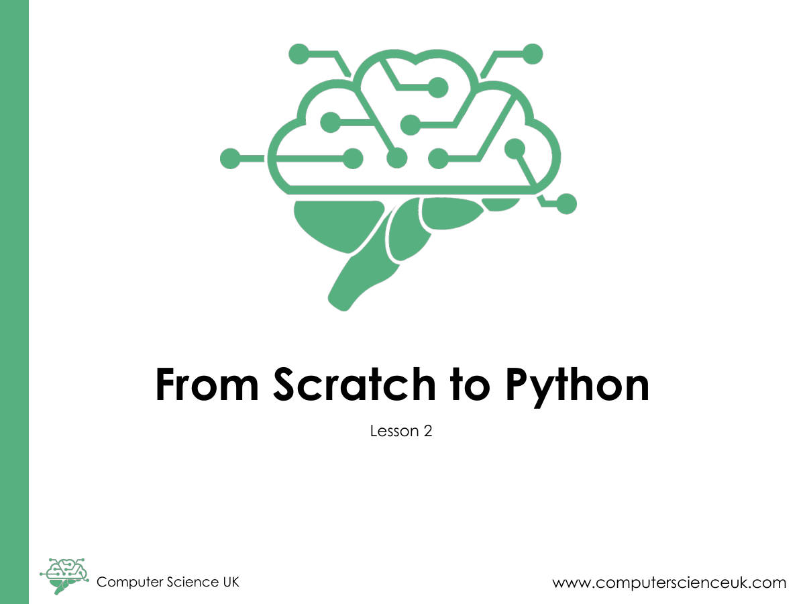
1쪽 · 파이썬 수업 표지
Computer Science UK
스크래치에서 파이썬으로
수업 2
이 자료는 Computer Science UK가 만든 것이며 스크래치에서 파이썬으로 넘어가는 수업이다
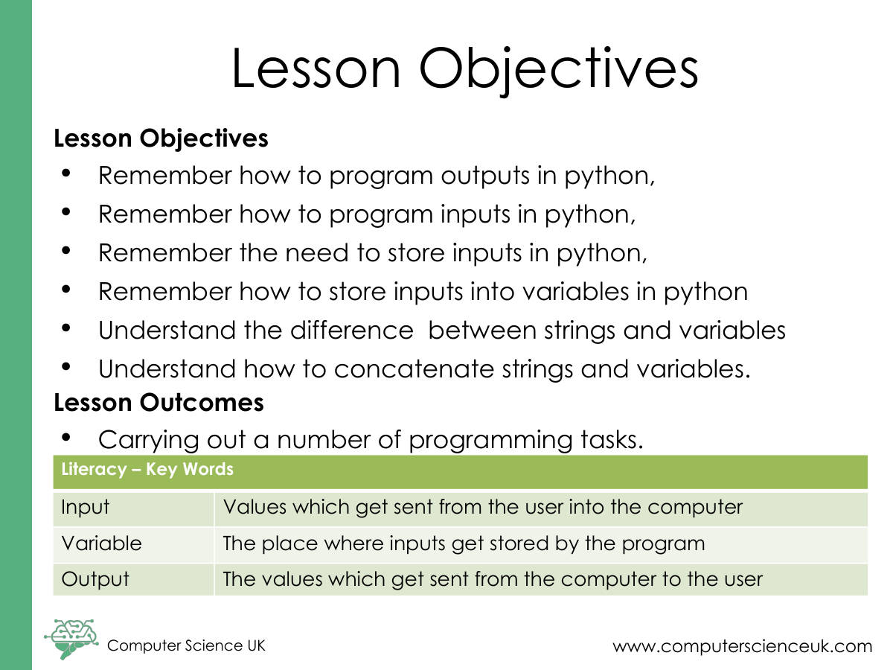
2쪽 · 학습 목표와 핵심 낱말
• 파이썬에서 출력을 프로그래밍하는 법을 기억한다.
• 파이썬에서 입력을 프로그래밍하는 법을 기억한다.
• 파이썬에서 입력을 저장해야 하는 이유를 기억한다.
• 파이썬에서 입력을 변수에 저장하는 법을 기억한다.
• 문자열과 변수의 차이를 이해한다.
• 문자열과 변수를 연결(concatenate)하는 법을 이해한다.
학습 성과
• 여러 가지 프로그래밍 과제를 수행한다.
핵심 낱말
입력(Input) — 사용자로부터 컴퓨터로 보내지는 값이다.
변수(Variable) — 프로그램이 입력을 저장해 두는 자리다.
출력(Output) — 컴퓨터로부터 사용자에게 보내지는 값이다.
입력은 사용자 → 컴퓨터로 가는 값이고, 출력은 컴퓨터 → 사용자로 가는 값이라 방향이 서로 반대다.
변수는 입력을 담아 두는 자리이므로, 입력을 받으면 변수에 저장해야 나중에 쓸 수 있다.
이 수업에서는 문자열과 변수가 서로 다르다는 점, 그리고 둘을 이어 붙이는 연결(concatenate)을 다룬다.
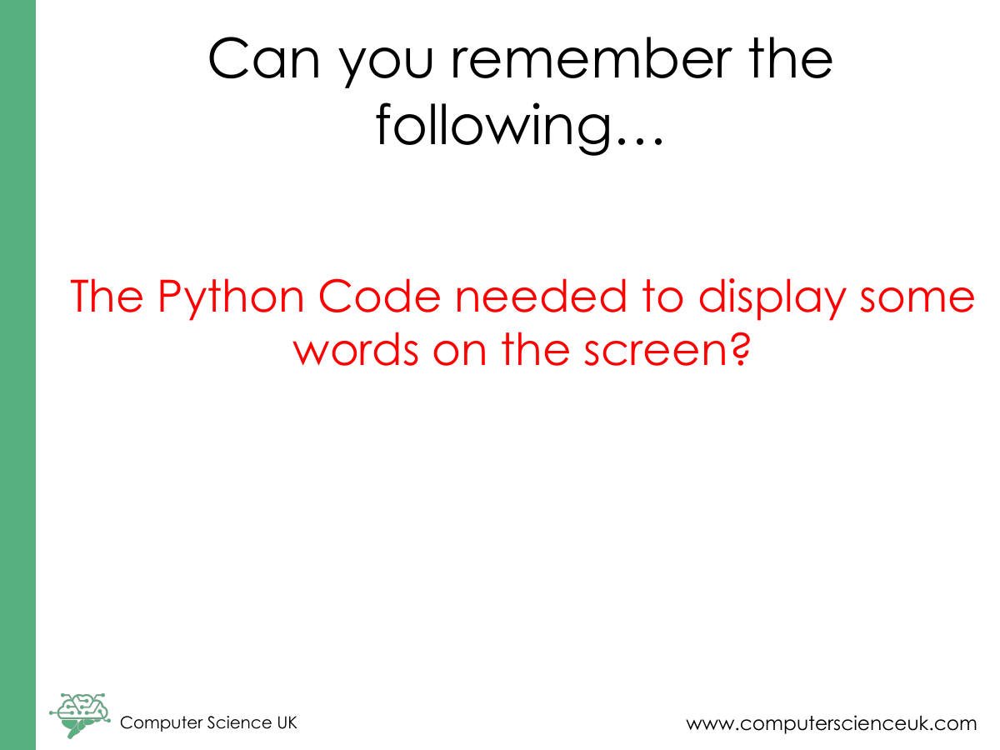
3쪽 · 기억나니? 화면에 글자 출력하기
화면에 글자를 표시하는 데 필요한 파이썬 코드는 무엇인가?
앞에서 배운 내용을 떠올려 보는 복습 질문 쪽이다.
화면에 글자를 표시하는 파이썬 코드를 기억해 내야 한다.
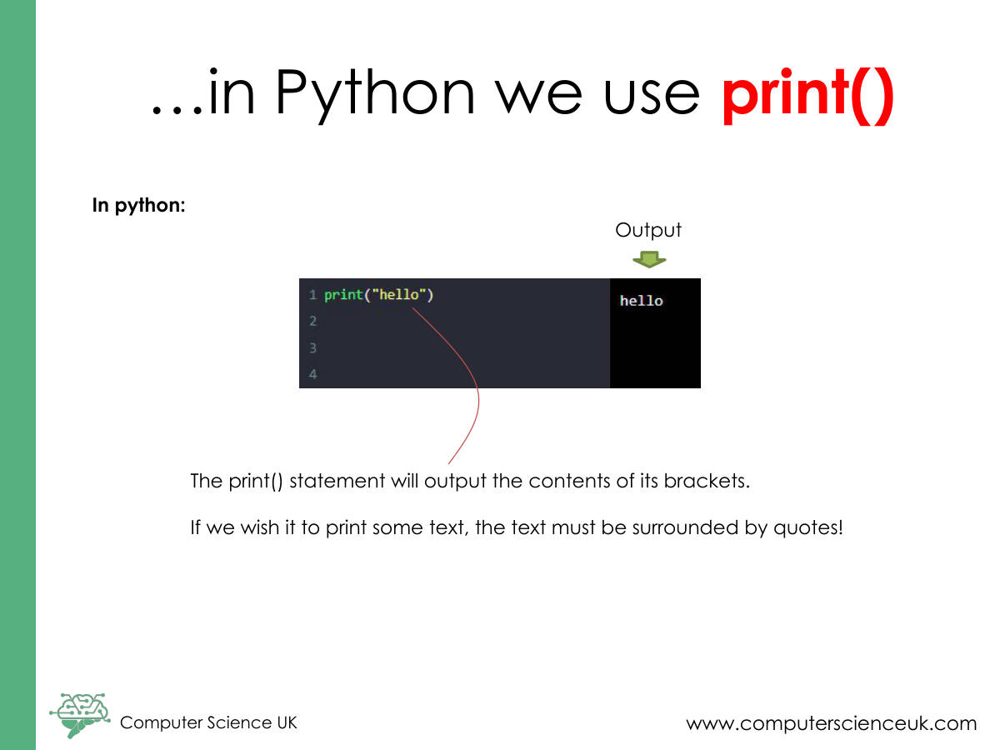
4쪽 · 파이썬의 print() 출력
파이썬에서:
print() 명령문은 괄호 안의 내용을 출력한다.
글자를 출력하고 싶으면 그 글자를 따옴표로 감싸야 한다.
출력
print()는 괄호 안에 넣은 것을 화면에 내보내는 명령이다.
글자(텍스트)를 출력할 때는 반드시 따옴표로 감싸야 한다.
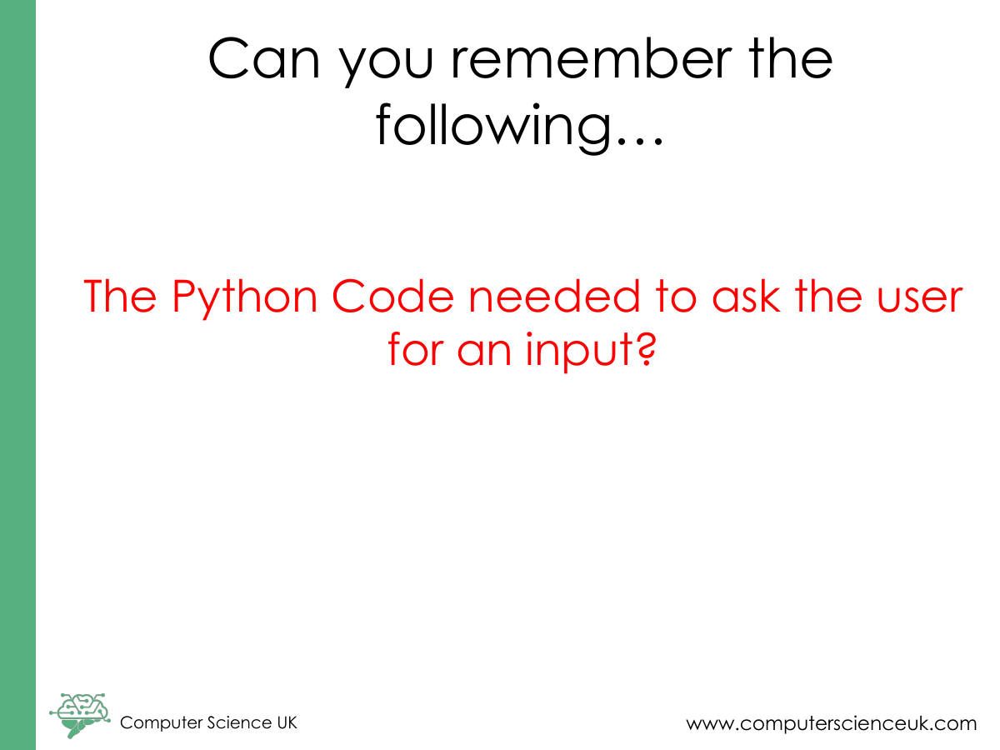
5쪽 · 복습: 입력 받는 코드
사용자에게 입력(input)을 요청할 때 필요한 파이썬 코드는?
앞 시간에 배운 내용을 떠올리는 복습 쪽이다.
사용자에게 입력을 받는 파이썬 코드를 기억해 내야 한다.

6쪽 · 파이썬 입력 받기와 저장
파이썬에서는 input 명령문이 프로그램으로 하여금 사용자에게 입력을 요청하게 해 준다.
answer 변수가 그 입력을 저장한다.
그리고 그 answer 변수를 print 명령문과 함께 써서 입력된 값을 출력할 수 있다.
출력
input 명령문은 사용자에게 값을 입력하라고 요청하는 역할을 한다.
사용자가 입력한 값은 answer 같은 변수에 저장되고, print로 다시 출력할 수 있다.
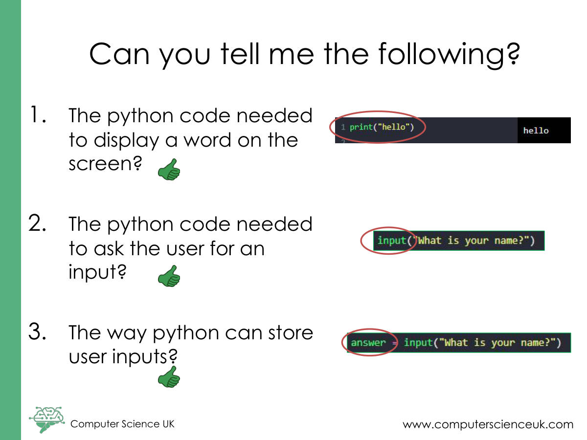
7쪽 · 파이썬 기초 복습 질문
1. 화면에 낱말을 표시하는 데 필요한 파이썬 코드는?
2. 사용자에게 입력을 요청하는 데 필요한 파이썬 코드는?
3. 파이썬이 사용자 입력을 저장하는 방법은?
앞에서 배운 세 가지, 즉 화면 출력·입력 요청·입력 저장을 스스로 답해 보는 복습 쪽이다.
이 세 가지가 파이썬 기초의 핵심 기능이다.

8쪽 · print와 input의 차이
PRINT는 메시지를 화면에 보여주기만 한다.
INPUT은 메시지를 보여주고 사용자가 입력할 때까지 기다린다.
그래서 사용자가 친 것을 저장하려면 변수에 넣어야 한다.
print는 화면에 보여주기만 하고, input은 보여준 뒤 사용자의 입력을 기다린다
input으로 받은 값을 저장하려면 변수에 넣어야 한다
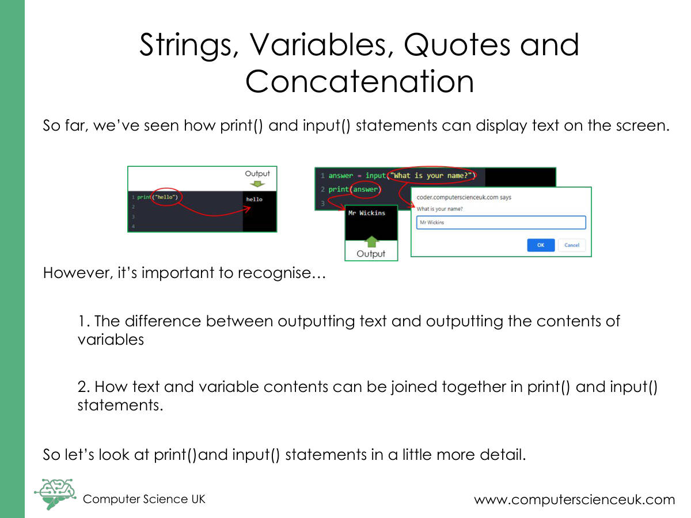
9쪽 · 문자열·변수·따옴표·이어붙이기
지금까지 print()와 input() 명령이 화면에 글자를 보여 주는 방법을 봤다.
하지만 다음을 아는 것이 중요하다.
1. 글자를 그대로 출력하는 것과 변수에 든 내용을 출력하는 것의 차이
2. 글자와 변수에 든 내용을 print()와 input() 안에서 어떻게 이어 붙일 수 있는지
그래서 print()와 input() 명령을 조금 더 자세히 살펴본다.
글자를 그대로 내보내는 것과 변수 안의 내용을 내보내는 것은 다르다는 점을 구분해야 한다.
print()와 input() 안에서 글자와 변수 내용을 이어 붙일 수 있다.
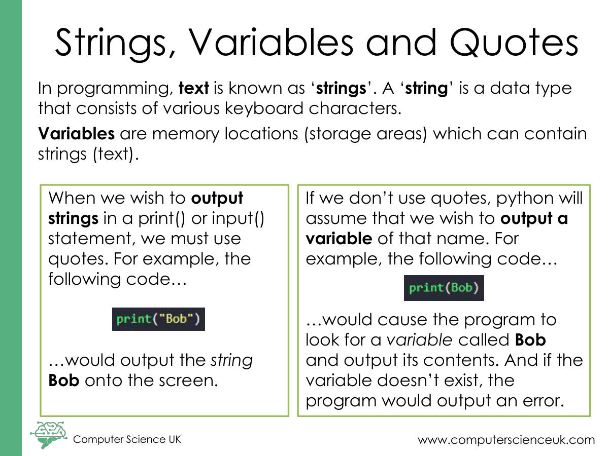
10쪽 · 문자열, 변수, 따옴표
문자열은 여러 키보드 문자로 이루어진 자료형이다.
변수는 문자열(글자)을 담을 수 있는 메모리 위치(저장 공간)다.
print()나 input() 문장에서 문자열을 출력하려면 반드시 따옴표를 써야 한다. 예를 들어 다음 코드는…
…화면에 문자열 Bob을 출력한다.
따옴표를 쓰지 않으면 파이썬은 그 이름을 가진 변수를 출력하려는 것으로 여긴다. 예를 들어 다음 코드는…
…Bob이라는 이름의 변수를 찾아 그 안에 든 내용을 출력한다. 그리고 그 변수가 없으면 프로그램은 오류를 출력한다.
따옴표로 감싼 Bob은 글자 그대로의 문자열이고, 따옴표 없는 Bob은 변수 이름으로 취급된다.
따옴표 없이 쓴 이름의 변수가 존재하지 않으면 프로그램은 오류를 낸다.
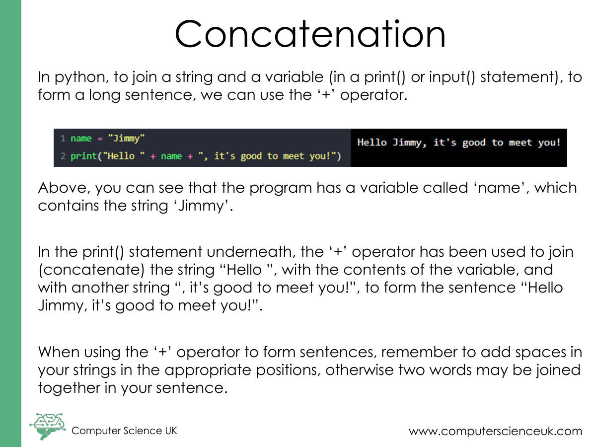
11쪽 · 문자열 이어붙이기(Concatenation)
파이썬에서 print()나 input() 문장 안에서 문자열과 변수를 이어 붙여 긴 문장을 만들려면 '+' 연산자를 쓸 수 있다.
위 예시에서 프로그램에는 name이라는 변수가 있고, 그 안에는 문자열 'Jimmy'가 들어 있다.
그 아래 print() 문장에서는 '+' 연산자로 문자열 "Hello "와 변수의 내용, 그리고 또 다른 문자열 ", it's good to meet you!"를 이어 붙여 "Hello Jimmy, it's good to meet you!"라는 문장을 만들었다.
'+' 연산자로 문장을 만들 때는 문자열 속 알맞은 자리에 띄어쓰기(공백)를 넣는 것을 잊지 말아야 한다. 그러지 않으면 두 낱말이 붙어 버릴 수 있다.
'+' 연산자는 문자열과 변수를 이어 붙여 한 문장으로 만드는 데 쓴다.
문자열 안에 공백을 넣지 않으면 낱말끼리 붙으므로, "Hello "처럼 알맞은 자리에 띄어쓰기를 넣어야 한다.
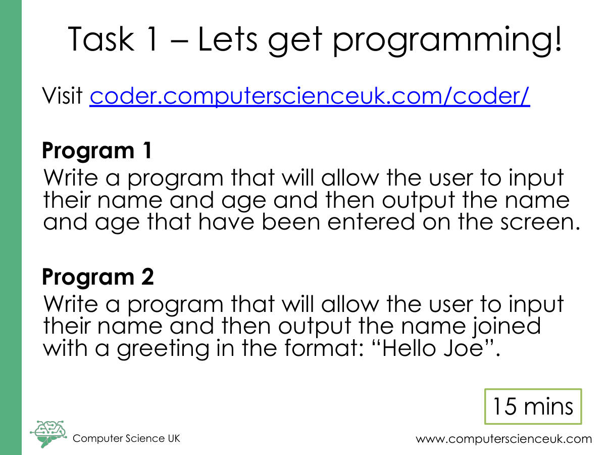
12쪽 · 실습 1 - 프로그램 만들기
coder.computerscienceuk.com/coder/ 에 접속한다.
프로그램 1
사용자가 이름과 나이를 입력하면, 입력한 이름과 나이를 화면에 출력하는 프로그램을 작성한다.
프로그램 2
사용자가 이름을 입력하면, 그 이름을 인사말과 합쳐서 “Hello Joe” 형식으로 출력하는 프로그램을 작성한다.
15분
프로그램 1은 input으로 이름과 나이를 받아 그대로 출력하는 연습이다.
프로그램 2는 입력받은 이름을 인사말과 이어 붙여 "Hello Joe" 형태로 만드는 연습이다.
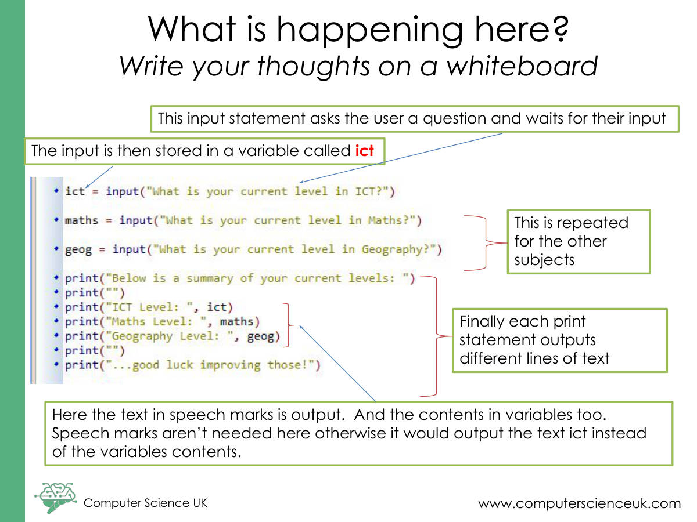
13쪽 · 입력과 출력이 하는 일
생각을 화이트보드에 적어 보자.
이 input 명령은 사용자에게 질문을 하고 사용자가 입력할 때까지 기다린다.
그리고 입력한 값은 ict라는 변수에 저장된다.
다른 과목들도 같은 방식으로 반복된다.
마지막으로 각 print 명령이 서로 다른 줄의 글을 출력한다.
여기서는 따옴표 안의 글이 출력된다. 그리고 변수에 담긴 내용도 함께 출력된다.
변수 쪽에는 따옴표가 필요 없다. 따옴표를 붙이면 변수에 담긴 내용 대신 ict라는 글자가 그대로 출력되기 때문이다.
input 명령은 질문을 띄우고 사용자가 입력할 때까지 기다리며, 입력한 값은 변수에 저장된다.
print에서 따옴표로 감싼 것은 글자 그대로 출력되고, 따옴표 없이 쓴 변수는 그 안에 담긴 내용이 출력된다.
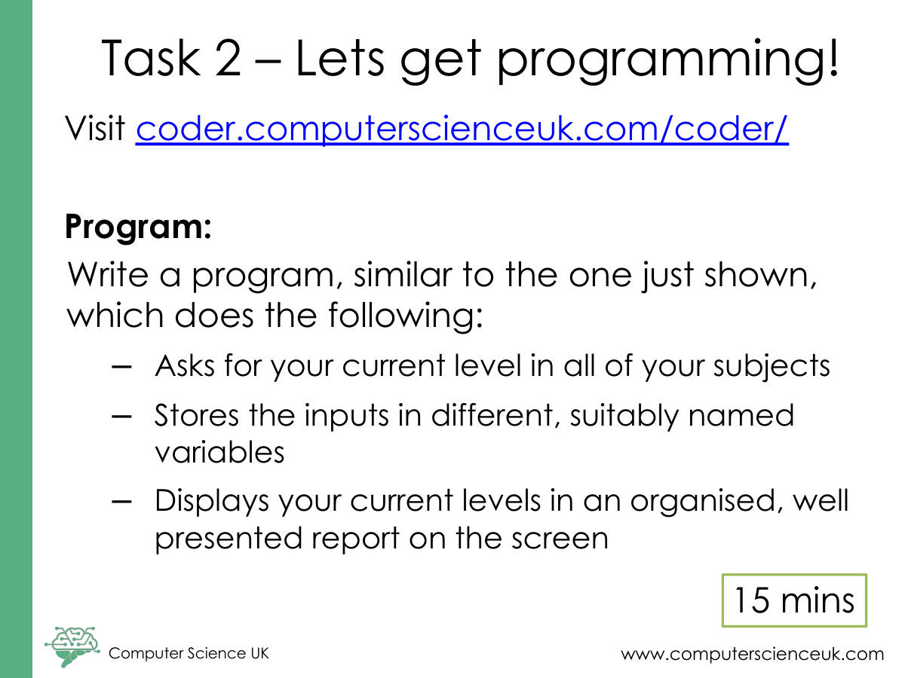
14쪽 · 과제 2 - 프로그래밍 시작
coder.computerscienceuk.com/coder/ 에 접속한다.
프로그램: 방금 본 것과 비슷한 프로그램을 다음 내용대로 작성한다.
– 자신의 모든 과목의 현재 등급(level)을 묻는다.
– 입력받은 값을 서로 다른, 알맞은 이름의 변수에 저장한다.
– 현재 등급을 정리되고 보기 좋은 보고서 형태로 화면에 표시한다.
제한 시간 15분
과목마다 입력값을 따로 저장해야 하므로 변수를 여러 개 만들고, 각각 무엇을 담는지 알 수 있는 이름을 붙인다.
입력만 받고 끝내는 것이 아니라, 저장한 값을 화면에 보기 좋게 정리해 출력하는 것까지가 과제다.

15쪽 · 수업 활동 안내
Computer Science UK
수업 활동
• 이 수업의 워크북에 있는 내용을 읽는다.
• 제공된 PRIMM 과제를 모두 푼다.
이 쪽은 수업 활동 안내이며, 워크북을 읽고 PRIMM 과제를 푸는 두 가지를 하라고 적혀 있다.
자료의 출처는 Computer Science UK(www.computerscienceuk.com)다.
출력(output) — 파이썬에서 화면에 글자를 띄울 때는 print()를 쓴다.
print()는 괄호 안에 든 내용을 화면에 내보낸다.
글자(텍스트)를 그대로 띄우고 싶으면 반드시 따옴표(quotes)로 감싸야 한다. 예: print("Bob")은 화면에 Bob이라고 찍힌다.
입력(input) — 사용자에게 무언가를 물어보고 받아 적을 때는 input()을 쓴다.
input은 화면에 질문을 띄우고, 사용자가 키보드로 칠 때까지 기다린다.
print와 input의 가장 큰 차이가 바로 이것이다. print는 그냥 보여주고 끝나지만, input은 보여주고 멈춰서 기다린다.
변수(variable) — input으로 받은 값은 그냥 두면 사라진다. 그래서 저장할 곳이 필요하고, 그 저장 장소가 변수다.
변수는 컴퓨터 메모리 안의 저장 공간(memory location / storage area)이다.
저장하려면 input 문장이 변수와 등호(=)로 연결돼야 한다. 예: answer = input("질문") 이렇게 쓰면 사용자가 친 값이 answer라는 변수에 들어간다.
그 뒤에 print(answer)라고 쓰면 저장해 둔 값이 화면에 나온다.
문자열(string) — 프로그래밍에서 글자(텍스트)를 string이라고 부른다. 키보드로 칠 수 있는 여러 문자들로 이루어진 자료형(data type)이다.
변수는 이 string을 담을 수 있는 그릇이다.
따옴표가 있고 없고의 차이 — 이것이 이 수업에서 제일 헷갈리는 부분이다.
print("Bob")처럼 따옴표가 있으면 → Bob이라는 글자 그 자체가 나온다.
print(Bob)처럼 따옴표가 없으면 → 파이썬은 Bob이라는 이름의 변수를 찾는다. 그 변수에 들어있는 내용을 대신 띄운다.
그런데 Bob이라는 변수가 아예 없으면 프로그램은 에러(error)를 낸다.
이어붙이기(concatenation) — 글자와 변수를 붙여서 긴 문장 하나로 만들 때는 + 기호(operator)를 쓴다.
예를 들어 name이라는 변수에 "Jimmy"가 들어있다고 하자.
print("Hello " + name + ", it's good to meet you!") 라고 쓰면 화면에는 Hello Jimmy, it's good to meet you! 라고 한 문장으로 나온다.
★주의할 점 — 따옴표 안 글자에 띄어쓰기(space)를 알맞은 자리에 직접 넣어야 한다. 안 넣으면 두 단어가 HelloJimmy처럼 딱 붙어버린다.
실제로 짜 보는 프로그램 — 이 수업에서 만들어 보는 것은 세 가지다.
① 이름과 나이를 input으로 받아 각각 변수에 저장하고, 그 둘을 화면에 출력하는 프로그램.
② 이름을 받아서 인사말과 이어붙여 "Hello Joe" 형태로 출력하는 프로그램.
③ 여러 과목(subject)의 현재 등급(level)을 하나씩 물어보고, 과목마다 알맞은 이름의 서로 다른 변수에 저장한 뒤, 보기 좋게 정리된 성적표 형태로 출력하는 프로그램.
③번에서 중요한 것은 변수 이름을 ict처럼 내용을 알아볼 수 있게 짓는 것과, print 안에서 따옴표 친 설명 글과 따옴표 없는 변수를 섞어 쓰는 것이다. 변수 자리에 따옴표를 치면 안에 든 값이 아니라 ict라는 글자가 그대로 나와 버린다.
✍️ 꼭 알아야 하는 것
- print와 input의 차이 — print는 메시지를 보여주기만 하고, input은 메시지를 보여준 뒤 사용자가 칠 때까지 기다린다. 그래서 input은 받은 값을 저장하려면 변수와 = 로 연결해야 한다.
- 따옴표의 유무 — 따옴표가 있으면 그 글자(string) 그대로 출력되고, 따옴표가 없으면 그 이름의 변수(variable) 속 내용이 출력된다. 없는 변수 이름이면 에러가 난다.
- + 로 string과 변수를 이어붙이는 concatenation, 그리고 띄어쓰기를 따옴표 안에 직접 넣어야 단어가 붙지 않는다는 점.
📚 이 자료의 핵심 단어
1쪽 · 레슨 2 표지 — 파이썬 입문
Computer Science UK(영국 컴퓨터 과학)
From Scratch to Python — 스크래치에서 파이썬으로
Lesson 2 — 2단원
이 수업은 블록 코딩인 스크래치에서 글로 쓰는 코드인 파이썬으로 넘어가는 과정이다
여기는 2단원의 표지 쪽이다
2쪽 · 수업 목표와 핵심 낱말
• 파이썬에서 출력을 프로그래밍하는 법을 기억한다.
• 파이썬에서 입력을 프로그래밍하는 법을 기억한다.
• 파이썬에서 입력을 저장해야 하는 이유를 기억한다.
• 파이썬에서 입력을 변수에 저장하는 법을 기억한다.
• 문자열과 변수의 차이를 이해한다.
• 문자열과 변수를 이어붙이는(concatenate) 법을 이해한다.
수업 성과
• 여러 가지 프로그래밍 과제를 수행한다.
문해력 – 핵심 낱말
Input(입력) — 사용자로부터 컴퓨터로 보내지는 값
Variable(변수) — 프로그램이 입력을 저장해 두는 자리
Output(출력) — 컴퓨터로부터 사용자에게 보내지는 값
입력은 사용자가 컴퓨터로 보내는 값이고, 출력은 컴퓨터가 사용자에게 보내는 값이다. 방향이 서로 반대다.
변수는 입력을 저장해 두는 자리이며, 이 수업에서는 문자열과 변수의 차이 그리고 둘을 이어붙이는 방법까지 다룬다.
3쪽 · 복습: 화면에 글자 출력하기
화면에 단어를 표시하는 데 필요한 파이썬 코드는?
앞 시간에 배운 내용을 떠올리는 복습 쪽이다.
화면에 글자를 나타내는 파이썬 코드를 기억해 내야 한다.
4쪽 · 파이썬의 print() 출력
파이썬에서:
print() 문은 괄호 안의 내용을 출력한다.
글자를 출력하고 싶으면 그 글자를 반드시 따옴표로 감싸야 한다.
출력(Output)
print() 는 괄호 안에 넣은 것을 화면에 출력하는 명령이다
글자(텍스트)를 출력할 때는 따옴표로 감싸야 한다
5쪽 · 기억나나요? 입력 코드
사용자에게 입력(input)을 받기 위해 필요한 파이썬 코드는?
www.computerscienceuk.com · Computer Science UK
앞에서 배운 내용을 떠올려 보는 복습 쪽이다.
사용자에게 값을 물어보는 입력 코드를 기억해 내야 한다.
6쪽 · 파이썬 입력 받고 저장하기
파이썬에서 'input' 명령문은 프로그램이 사용자에게 입력을 넣으라고 요청하도록 해 준다.
'answer' 변수가 그 입력을 저장한다.
그리고 answer 변수를 'print' 명령문과 함께 써서 입력된 값을 출력할 수 있다.
출력
input 명령문은 사용자에게 값을 입력받는 데 쓴다
입력받은 값은 변수(answer)에 저장되고, print로 그 변수를 다시 출력할 수 있다
7쪽 · 배운 것 확인 질문
1. 화면에 낱말을 표시하는 데 필요한 파이썬 코드는?
2. 사용자에게 입력을 요청하는 데 필요한 파이썬 코드는?
3. 파이썬이 사용자 입력을 저장하는 방법은?
화면 출력·사용자 입력·입력값 저장, 이 세 가지를 스스로 답할 수 있어야 한다.
세 질문이 이 수업에서 배운 핵심을 확인하는 물음이다.
8쪽 · print와 input의 차이
PRINT는 그냥 메시지를 화면에 보여 준다.
INPUT은 메시지를 보여 주고 사용자가 입력할 때까지 기다린다.
그래서 사용자가 입력한 것을 저장하려면 변수에 넣어야 한다.
print는 화면에 보여 주기만 하고, input은 보여 준 뒤 사용자의 입력을 기다린다.
input으로 받은 값을 쓰려면 변수에 저장해야 한다(변수 = input(...) 형태).
9쪽 · 문자열·변수·따옴표와 이어붙이기
지금까지 우리는 print()와 input() 명령이 화면에 글자를 보여주는 방법을 봤다.
하지만 다음을 아는 것이 중요하다.
1. 글자를 출력하는 것과 변수에 든 내용을 출력하는 것의 차이
2. print()와 input() 명령 안에서 글자와 변수 내용을 어떻게 이어붙일 수 있는지
그러니 print()와 input() 명령을 조금 더 자세히 살펴보자.
글자를 그대로 출력하는 것과 변수에 담긴 내용을 출력하는 것은 서로 다르다.
print()와 input() 안에서 글자와 변수 내용을 이어붙일 수 있다.
10쪽 · 문자열, 변수, 따옴표
문자열은 여러 키보드 문자로 이루어진 자료형(data type)이다.
변수는 문자열(글자)을 담을 수 있는 메모리 위치(저장 공간)다.
print()나 input() 문장에서 문자열을 출력하고 싶을 때는 반드시 따옴표를 써야 한다.
예를 들어 다음 코드는 화면에 문자열 Bob을 출력한다.
따옴표를 쓰지 않으면 파이썬은 그 이름을 가진 변수를 출력하려는 것으로 여긴다.
예를 들어 다음 코드는 Bob이라는 변수를 찾아 그 안에 든 내용을 출력한다.
그리고 그 변수가 없으면 프로그램은 오류를 출력한다.
문자열은 키보드 문자로 이루어진 자료형이고, 변수는 그 문자열을 담는 저장 공간이다.
print()나 input()에서 글자 그대로 출력하려면 따옴표를 쓰고, 따옴표를 빼면 같은 이름의 변수를 찾아 그 내용을 출력하며 변수가 없으면 오류가 난다.
11쪽 · 문자열 이어붙이기(Concatenation)
파이썬에서 print()나 input() 안에서 문자열과 변수를 이어 붙여 긴 문장을 만들려면 '+' 연산자를 쓸 수 있다.
위 그림에서 프로그램에는 name이라는 변수가 있고, 그 안에는 문자열 'Jimmy'가 들어 있다.
그 아래 print() 문에서는 '+' 연산자로 문자열 "Hello "와 변수의 내용, 그리고 또 다른 문자열 ", it's good to meet you!"를 이어 붙여 "Hello Jimmy, it's good to meet you!"라는 문장을 만들었다.
'+' 연산자로 문장을 만들 때는 문자열의 알맞은 자리에 띄어쓰기를 넣는 것을 잊지 말아야 한다. 그렇지 않으면 두 낱말이 붙어버릴 수 있다.
'+' 연산자로 문자열과 변수를 이어 붙여 한 문장을 만든다.
문자열 안 알맞은 위치에 띄어쓰기를 넣지 않으면 낱말끼리 붙어버린다.
12쪽 · 실습 1 — 첫 프로그램 만들기
coder.computerscienceuk.com/coder/ 에 접속한다.
프로그램 1
사용자가 자기 이름과 나이를 입력하게 하고, 입력된 이름과 나이를 화면에 출력하는 프로그램을 작성한다.
프로그램 2
사용자가 자기 이름을 입력하게 하고, 그 이름을 인사말과 이어 붙여 “Hello Joe” 형식으로 출력하는 프로그램을 작성한다.
제한 시간 15분
프로그램 1은 input으로 이름과 나이를 받아 print로 그대로 내보내는 연습이다.
프로그램 2는 받은 이름을 인사말과 이어 붙여 'Hello Joe'처럼 한 줄로 출력하는 연습이다.
13쪽 · input으로 받아 출력하기
생각한 것을 화이트보드에 적어 본다.
이 input 문장은 사용자에게 질문을 하고 입력을 기다린다.
입력된 값은 ict라는 변수에 저장된다.
나머지 과목들도 이와 똑같이 반복된다.
마지막으로 각 print 문장이 서로 다른 줄의 글자를 출력한다.
여기서는 따옴표 안의 글자가 출력된다. 그리고 변수에 담긴 내용도 함께 출력된다.
변수 이름에는 따옴표가 필요하지 않다. 따옴표를 쓰면 변수에 담긴 내용이 아니라 ict라는 글자가 그대로 출력된다.
input 문장은 질문을 띄우고 사용자가 입력할 때까지 기다린 뒤, 그 값을 변수에 저장한다.
print에서 따옴표로 감싼 것은 글자 그대로 출력되고, 따옴표 없이 쓴 변수는 그 안에 담긴 내용이 출력된다.
14쪽 · 과제 2 - 과목별 성취도 프로그램 만들기
coder.computerscienceuk.com/coder/ 에 접속한다.
프로그램: 방금 본 것과 비슷한 프로그램을 다음 조건대로 작성한다.
– 내 모든 과목의 현재 성취도(level)를 입력받는다
– 입력값을 각각 알맞은 이름을 붙인 서로 다른 변수에 저장한다
– 현재 성취도를 정리되고 보기 좋은 보고서 형태로 화면에 출력한다
제한 시간: 15분
과목마다 서로 다른 변수를 만들고, 그 변수 이름은 무엇을 담았는지 알 수 있게 붙여야 한다
입력(input)으로 받은 값을 변수에 저장한 뒤, 출력할 때는 보기 좋게 정리된 형태로 화면에 보여준다
15쪽 · 수업 활동 안내
Computer Science UK
수업 활동
• 이 수업의 워크북에 있는 내용을 읽는다.
• 제공된 PRIMM 과제를 완성한다.
이 쪽은 수업 활동 안내로, 워크북을 읽고 PRIMM 과제를 푸는 두 가지 할 일을 제시한다.
PRIMM은 코드를 따라 해보고 바꿔보며 배우는 수업 방식의 이름이다.
입력·변수·출력(input, variable, output) — input은 사용자가 컴퓨터로 보내는 값이다.
variable(변수)는 그 입력이 저장되는 자리다.
output은 컴퓨터가 사용자에게 내보내는 값이다.
파이썬에서 input 문은 사용자에게 값을 입력하라고 물어보고, 그 값을 변수에 저장한 뒤 print 문으로 다시 화면에 내보낼 수 있다.
print와 input의 차이 — print는 메시지를 화면에 보여주기만 한다.
input은 메시지를 보여준 다음 사용자가 입력할 때까지 기다린다.
그래서 사용자가 친 값을 저장하려면 input 문은 반드시 변수와 =로 연결되어야 한다. 예: answer = input(...)
자료형 세 가지(data types) — String(문자열)은 키보드로 칠 수 있는 글자·숫자·기호의 아무 조합이다.
Integer(정수)는 소수점이 없는 정수다. 컴퓨터가 어떤 값을 integer로 알고 있으면 그 값으로 계산(maths)을 할 수 있다.
Real(실수)은 소수점이 있는 소수·분수형 수다.
왜 컴퓨터에 자료형을 알려줘야 하나 — 컴퓨터는 값을 변수에 저장하는데, 그 입력을 이해하려면 그것이 어떤 종류의 데이터인지 알아야 한다.
변수에 단어를 담을 거면 그 변수가 string이라고 알려줘야 한다.
변수에 정수를 담고 계산을 시킬 거면 그 변수가 integer라고 알려줘야 한다.
이것을 하지 않으면 프로그램은 작동하지 않는다.
입력은 무조건 문자열로 들어온다 — num1 = input("please enter a number") 처럼 숫자를 입력받아도, 파이썬은 그 변수를 자동으로 string으로 설정한다.
파이썬은 그것을 숫자로 인식하지 않고 그냥 키보드 기호로 인식하기 때문이다.
그래서 입력받은 값으로 계산을 하려면 그 변수가 숫자(integer)를 담고 있다고 컴퓨터에 따로 알려줘야 한다.
자료형 바꾸기 — int() 함수 — 변수를 integer 자료형으로 변환(convert)하면 된다. 이때 쓰는 것이 int() 함수다.
num1, num2에 두 숫자를 입력받아 저장했다면, 파이썬은 이것을 string으로 저장했으므로 int()로 감싸 integer로 바꿔 준다.
자료에서는 이것을 'Mr Int.'라는 그림으로 설명한다. 변수 num1 안에 든 것이 'Twenty Nine(글자)'이 아니라 29(숫자)임을, 즉 이 변수는 단어가 아니라 숫자를 담고 있다는 것을 컴퓨터에게 알려 주는 역할이다.
변환한 뒤에야 계산이 된다 — num1에 'Five', num2에 'Nine'처럼 글자로 들어 있던 것이 int() 변환 뒤 5와 9라는 숫자가 된다.
그 다음 5 + 9를 해서 answer 변수에 14가 저장되고, 그 값을 출력할 수 있다.
즉 순서는 입력 → int()로 변환 → 계산(arithmetic) → 출력이다.
✍️ 꼭 알아야 하는 것
- 파이썬에서 input()으로 받은 값은 숫자를 쳤더라도 항상 string이라는 것, 그래서 계산 전에 int()로 변환해야 한다는 것
- String(글자·숫자·기호 조합), Integer(정수), Real(소수)의 뜻을 영어 용어 그대로 구분해 쓰는 것
- print는 보여주기만 하고 input은 보여준 뒤 사용자 입력을 기다리므로 변수에 저장해야 한다는 차이
📚 이 자료의 핵심 단어
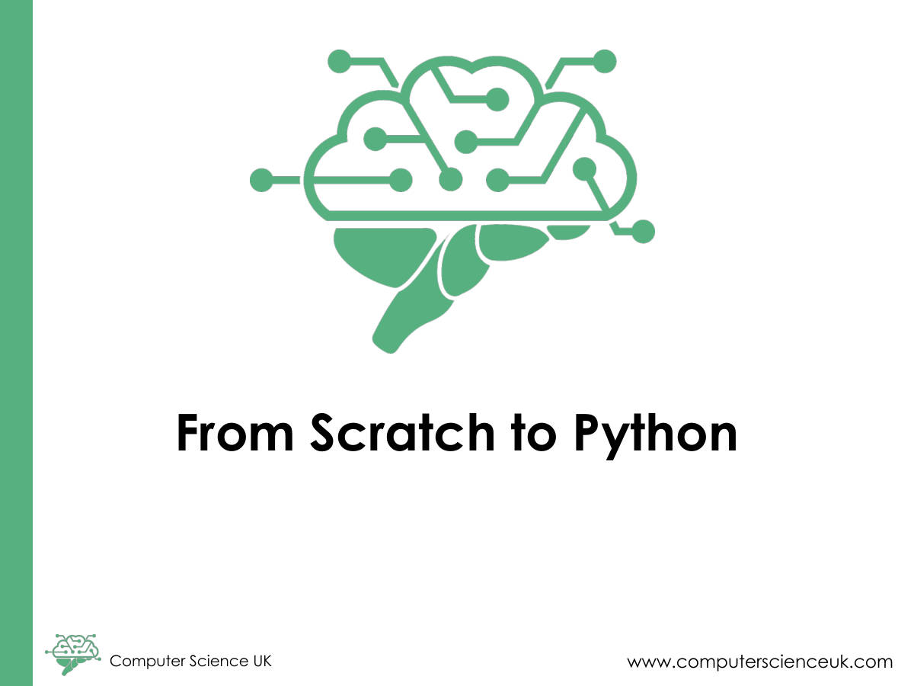
1쪽 · 표지 — 스크래치에서 파이썬으로
Computer Science UK
스크래치에서 파이썬으로
이 자료는 Computer Science UK가 만든 것이고, 스크래치에서 파이썬으로 넘어가는 수업이다.
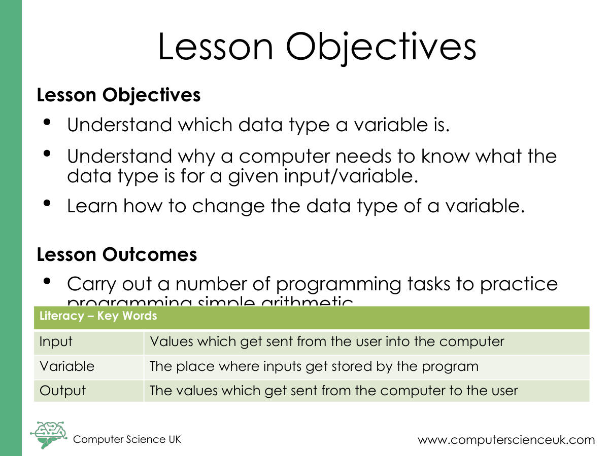
2쪽 · 학습 목표와 핵심 낱말
변수가 어떤 자료형인지 이해한다.
주어진 입력이나 변수의 자료형을 컴퓨터가 왜 알아야 하는지 이해한다.
변수의 자료형을 바꾸는 방법을 배운다.
수업 성과
간단한 산술 연산 프로그래밍을 연습하는 여러 과제를 수행한다.
핵심 낱말
입력(Input) — 사용자가 컴퓨터로 보내는 값이다.
변수(Variable) — 프로그램이 입력을 저장해 두는 자리다.
출력(Output) — 컴퓨터가 사용자에게 보내는 값이다.
이 수업에서는 변수의 자료형을 알아보는 법, 컴퓨터가 자료형을 알아야 하는 이유, 자료형을 바꾸는 방법 세 가지를 배운다.
입력은 사용자에서 컴퓨터로, 출력은 컴퓨터에서 사용자로 가는 값이고, 변수는 그 입력이 저장되는 곳이다.
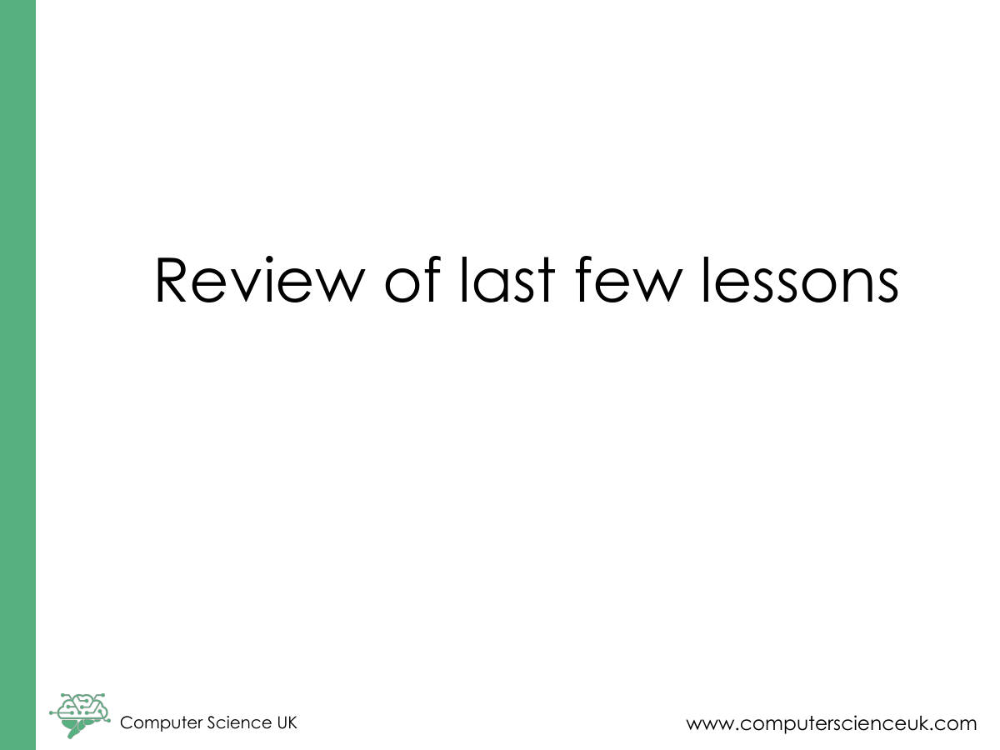
3쪽 · 지난 수업 복습
www.computerscienceuk.com
지난 몇 번의 수업을 복습한다.
새 내용으로 넘어가기 전에 지난 수업 내용을 다시 짚는 쪽이다

4쪽 · 복습 질문 — 파이썬 기초
1. 화면에 낱말을 보여주는 데 필요한 파이썬 코드는?
2. 사용자에게 입력을 요청하는 데 필요한 파이썬 코드는?
3. 파이썬이 사용자 입력을 저장하는 방법은?
앞에서 배운 세 가지를 스스로 답해 보는 복습 쪽이다.
화면 출력, 사용자 입력 받기, 입력값 저장 — 이 세 가지가 확인 대상이다.
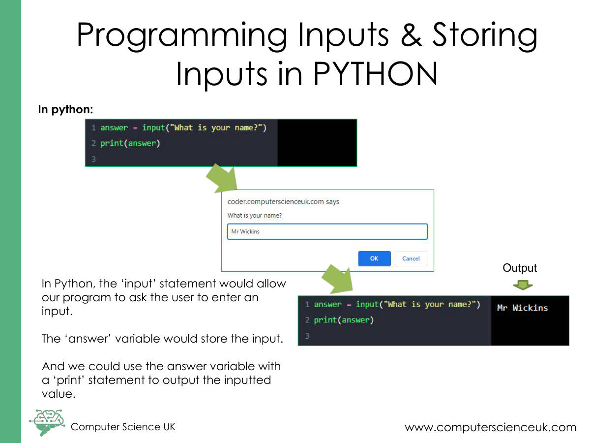
5쪽 · 파이썬 입력과 저장
파이썬에서 input 명령은 프로그램이 사용자에게 입력을 하라고 물어보게 해 준다.
answer 변수는 그 입력값을 저장한다.
그리고 그 answer 변수를 print 명령과 함께 써서 입력된 값을 출력할 수 있다.
input은 사용자에게 값을 입력받는 명령이다.
입력받은 값은 변수(answer)에 저장되고, print로 다시 출력할 수 있다.
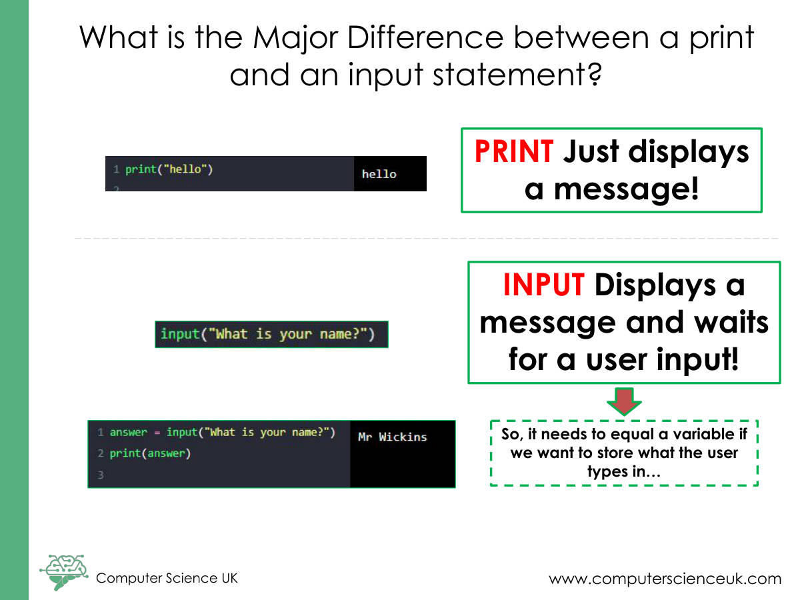
6쪽 · print와 input의 차이
PRINT는 그냥 메시지를 보여줄 뿐이다.
INPUT은 메시지를 보여주고 사용자의 입력을 기다린다.
그래서 사용자가 입력한 것을 저장하려면 변수에 넣어야 한다.
print는 화면에 보여주기만 하고 멈추지 않지만, input은 보여준 뒤 사용자가 입력할 때까지 기다린다.
input으로 받은 값을 저장하려면 변수에 대입해야 한다.
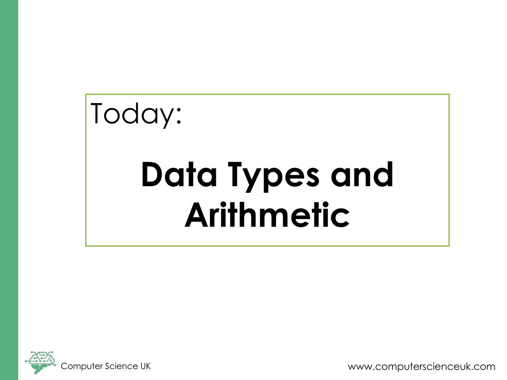
7쪽 · 오늘 배울 것: 자료형과 계산
Computer Science UK
오늘 배울 것:
자료형과 계산
이 수업에서 다룰 두 가지는 자료형(Data Types)과 계산(Arithmetic)이다.
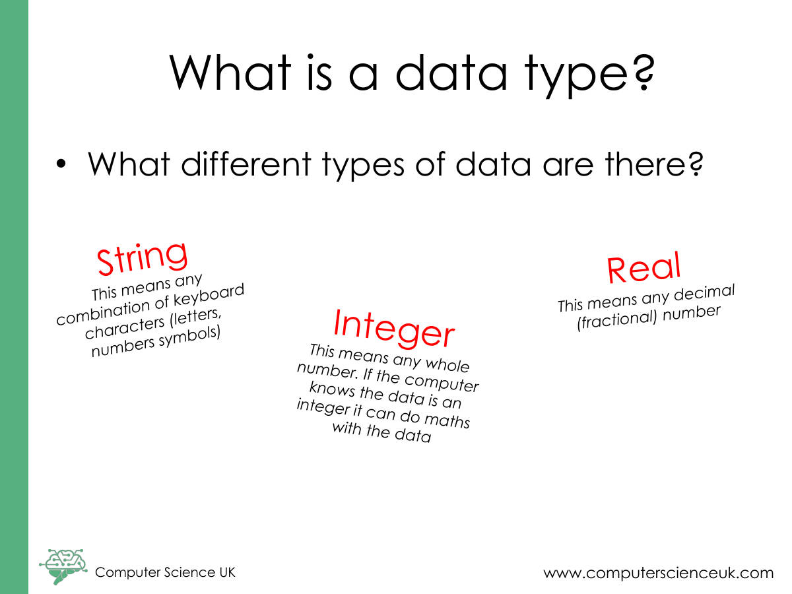
8쪽 · 자료형이란 무엇인가
• 어떤 종류의 자료들이 있는가?
문자열(String)
키보드 문자(글자, 숫자, 기호)를 아무렇게나 조합한 것을 뜻한다.
정수(Integer)
모든 정수(소수점 없는 수)를 뜻한다. 컴퓨터가 그 자료를 정수로 알고 있으면 그 자료로 계산을 할 수 있다.
실수(Real)
모든 소수(분수 형태의 수)를 뜻한다.
문자열은 글자·숫자·기호를 아무렇게나 조합한 것이라, 그 안에 숫자가 들어 있어도 계산용 수가 아니다.
정수는 소수점이 없는 수이고 실수는 소수점이 있는 수이며, 컴퓨터가 정수로 인식해야 그 자료로 계산을 할 수 있다.
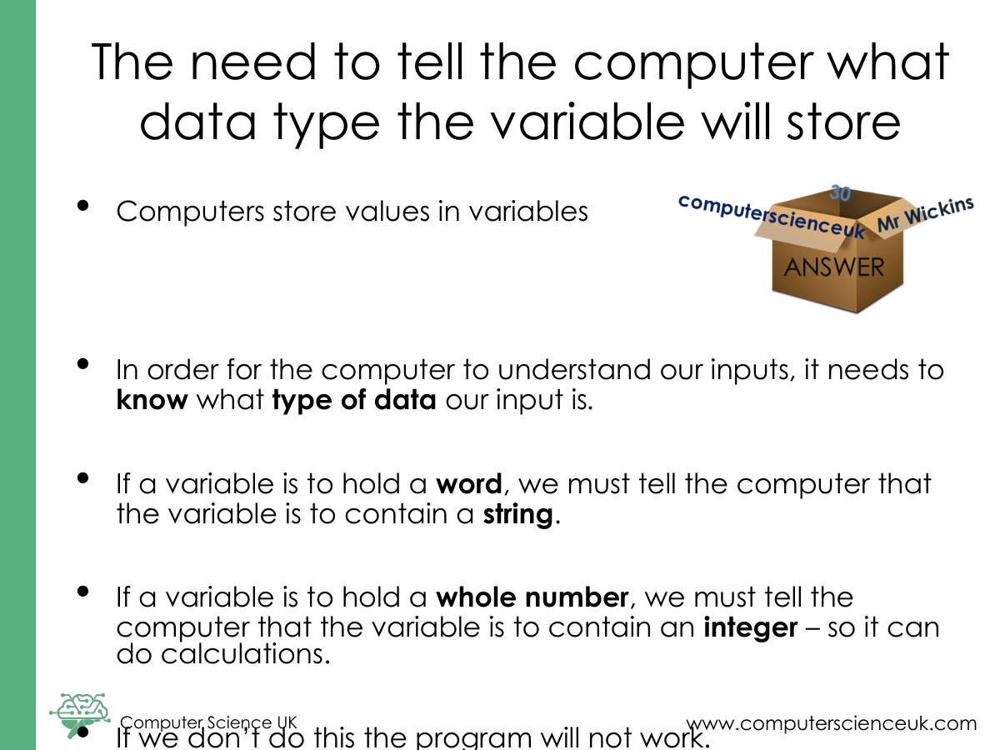
9쪽 · 변수의 자료형을 알려줘야 하는 까닭
컴퓨터가 우리가 넣는 값을 이해하려면, 그 값이 어떤 자료형인지 알아야 한다.
변수에 낱말을 담으려면, 그 변수가 문자열을 담는다고 컴퓨터에 알려줘야 한다.
변수에 정수를 담으려면, 그 변수가 정수를 담는다고 알려줘야 한다 — 그래야 계산을 할 수 있다.
이것을 하지 않으면 프로그램이 작동하지 않는다.
컴퓨터는 변수에 담기는 값의 자료형을 알아야 입력을 이해한다.
낱말은 문자열, 정수는 정수로 알려줘야 하고 정수라고 알려줘야 계산이 된다. 알려주지 않으면 프로그램이 돌아가지 않는다.
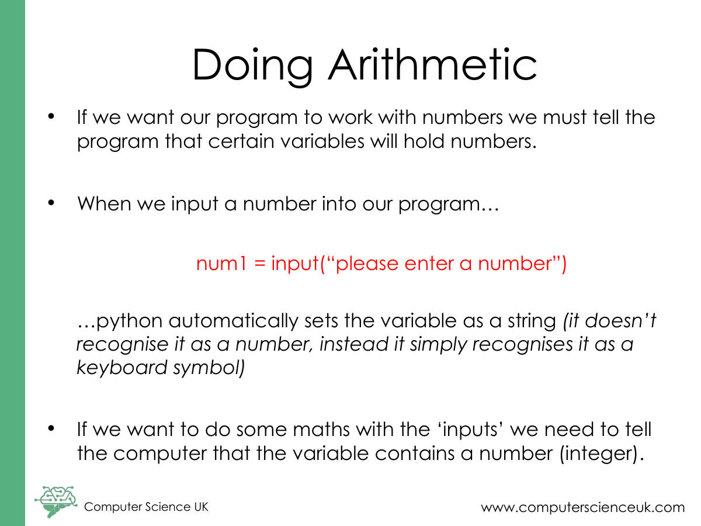
10쪽 · 숫자 계산하기
프로그램이 숫자를 다루게 하려면, 어떤 변수가 숫자를 담을 것이라고 프로그램에 알려 주어야 한다.
프로그램에 숫자를 입력할 때…
num1 = input("please enter a number")
…파이썬은 그 변수를 자동으로 문자열(string)로 정한다. (숫자로 알아보지 못하고, 그저 키보드 기호로만 알아본다.)
입력받은 값으로 계산을 하려면, 그 변수가 숫자(정수, integer)를 담고 있다고 컴퓨터에 알려 주어야 한다.
input()으로 받은 값은 파이썬이 무조건 문자열로 저장한다 — 숫자로 보지 않는다.
계산을 하려면 그 변수가 정수(integer)라고 컴퓨터에 알려 줘야 한다.
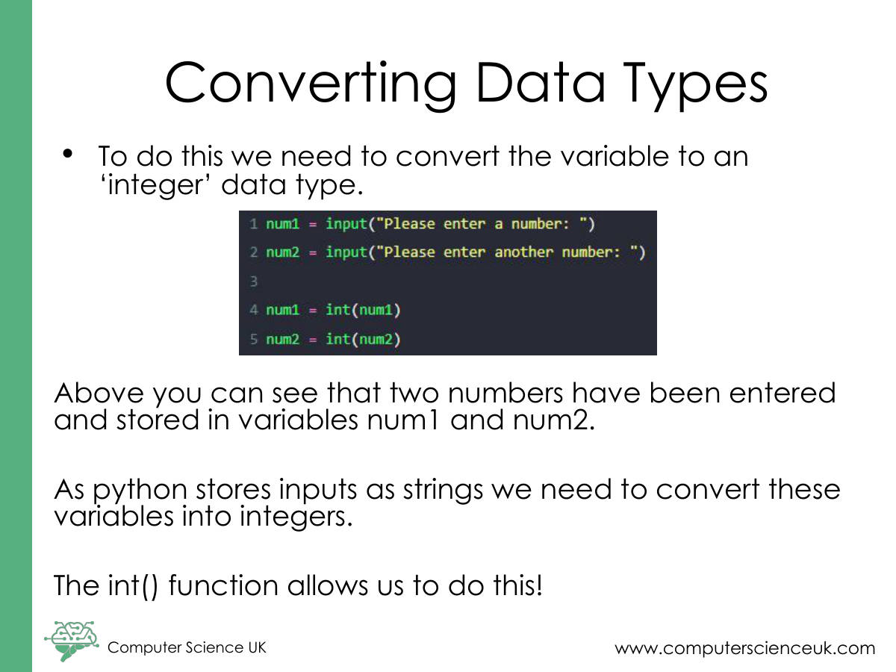
11쪽 · 자료형 바꾸기 — int()
위에서 두 개의 숫자가 입력되어 num1과 num2라는 변수에 저장된 것을 볼 수 있다.
파이썬은 입력을 문자열(string)로 저장하기 때문에 이 변수들을 정수(integer)로 바꿔야 한다.
그렇게 하려면 변수를 '정수(integer)' 자료형으로 변환해야 한다.
int() 함수가 이것을 할 수 있게 해 준다!
파이썬은 input()으로 받은 값을 문자열로 저장하므로, 숫자로 쓰려면 변환해야 한다.
int() 함수를 쓰면 변수를 정수 자료형으로 바꿀 수 있다.
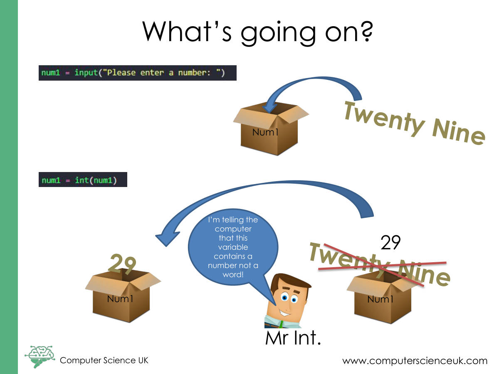
12쪽 · 컴퓨터에 숫자라고 알려주기
Num1에 29가 들어 있다.
컴퓨터는 이것을 Twenty Nine(스물아홉이라는 글자)으로 볼 수도 있고 29라는 숫자로 볼 수도 있다.
Mr Int.가 나서서 말한다.
"나는 이 변수가 낱말이 아니라 숫자를 담고 있다고 컴퓨터에게 알려주는 것이다!"
같은 29라도 컴퓨터는 글자(Twenty Nine)로 볼지 숫자로 볼지 스스로 정하지 못한다.
int는 그 변수에 든 것이 낱말이 아니라 숫자임을 컴퓨터에게 알려 주는 역할을 한다.
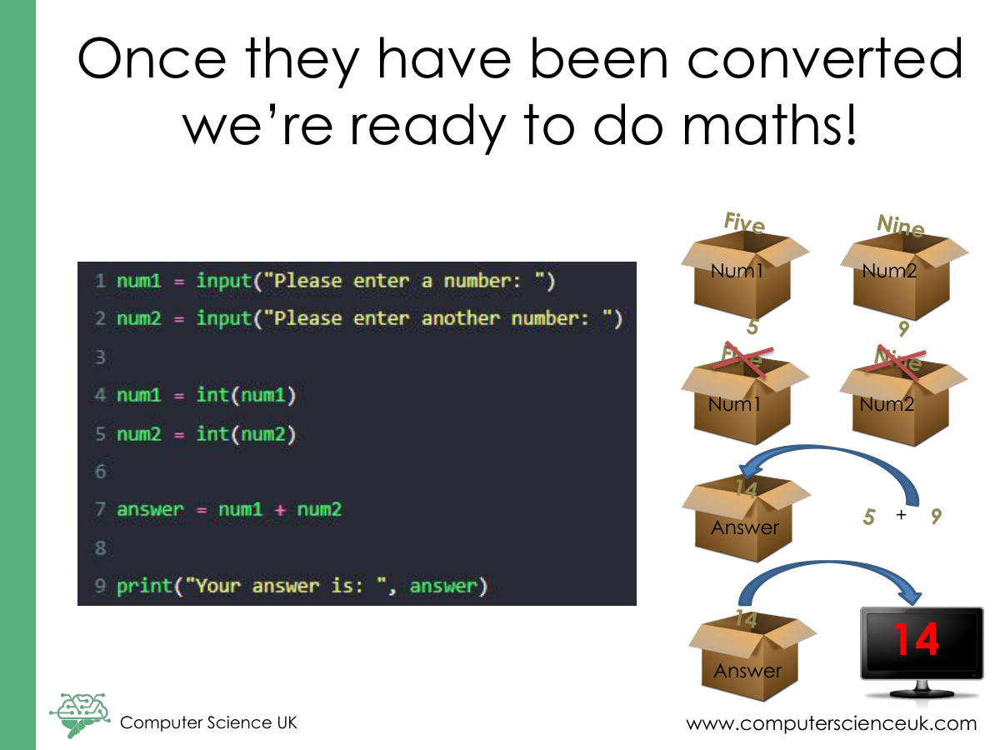
13쪽 · 변환 후 덧셈 계산
Num1은 Five, Num2는 Nine이다.
변환되어 5와 9가 된다.
5 + 9를 한다.
Answer는 14이다.
글자로 된 Five, Nine을 숫자 5, 9로 바꾼 뒤에야 덧셈을 할 수 있다.
5 + 9의 결과 14가 Answer라는 변수에 담긴다.
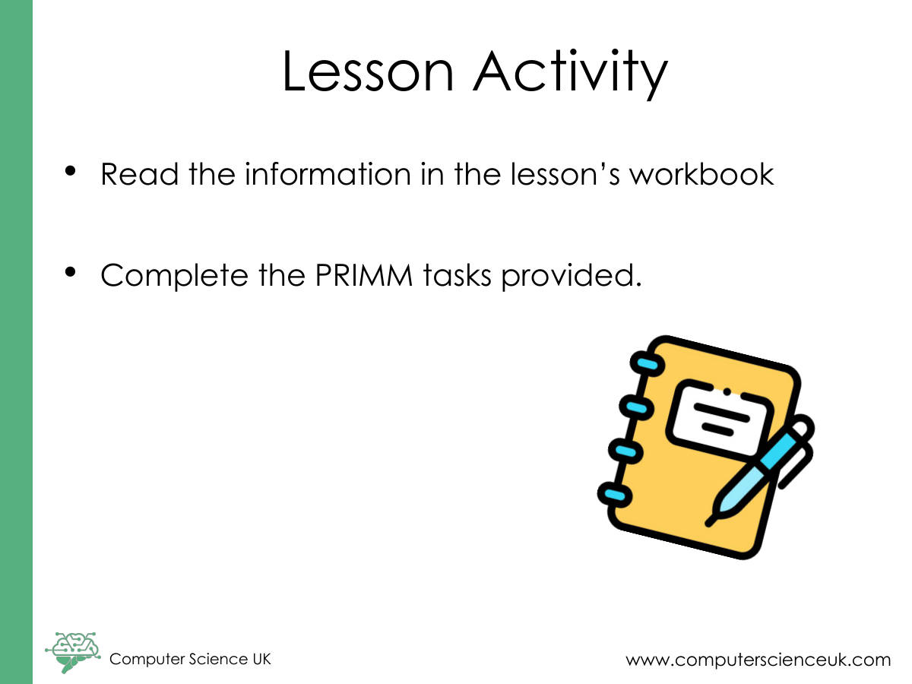
14쪽 · 수업 활동 안내
수업 활동(Lesson Activity)
수업 워크북에 있는 내용을 읽는다.
주어진 PRIMM 과제를 완성한다.
이 쪽은 수업 활동 안내다. 워크북을 읽고 PRIMM 과제를 푸는 것이 할 일이다.
PRIMM은 이 수업에서 주는 과제 방식의 이름이다.
파이썬(Python) — 파이썬은 사람이 쓴 글에 가까운 프로그래밍 언어(programming language)다.
적어 놓은 줄을 위에서 아래로 한 줄씩 차례대로 실행한다.
Exercise 1은 코드를 직접 쳐서 결과를 확인하는 실습이므로, 눈으로 읽기만 하지 말고 실제로 입력해서 돌려 봐야 한다.
출력 print() — 화면에 무언가를 보여 주려면 print()를 쓴다.
글자를 그대로 보여 줄 때는 반드시 따옴표(quotation marks)로 감싼다. 예: print("Hello")
따옴표 없이 쓰면 파이썬은 그것을 글자가 아니라 이름으로 착각한다.
숫자는 따옴표 없이 쓴다. print(3+4)는 7을 보여 주지만 print("3+4")는 3+4라는 글자를 그대로 보여 준다.
변수(variable)와 대입(assignment) — 값을 상자에 담아 이름을 붙여 두는 것이 변수다.
예: name = "Seojeong", age = 15
여기서 =은 '같다'가 아니라 '오른쪽 값을 왼쪽 이름에 넣어라'는 뜻이다. 이것을 대입이라고 한다.
같은 이름에 새 값을 넣으면 예전 값은 사라지고 마지막 값만 남는다.
변수 이름은 띄어쓰기를 못 쓰고 숫자로 시작할 수 없으며, 대문자와 소문자를 다른 글자로 구분한다(Name과 name은 다른 변수다).
자료형(data type) — 값의 종류다.
정수(int)는 3, 10처럼 소수점이 없는 수다.
실수(float)는 3.5처럼 소수점이 있는 수다.
문자열(string, str)은 따옴표로 감싼 글자다.
불리언(boolean, bool)은 True 또는 False 둘 중 하나다. True와 False는 첫 글자가 대문자다.
종류가 다르면 다루는 방법도 달라진다. "5"는 숫자처럼 보여도 글자다.
입력 input() — 사용자에게 무언가를 물어볼 때 쓴다. 예: name = input("What is your name? ")
여기서 꼭 기억할 점은 input()이 받아 온 값은 언제나 문자열(string)이라는 것이다.
그래서 나이나 개수처럼 계산에 쓸 값은 int()나 float()로 바꿔 줘야 한다. 예: age = int(input("Your age: "))
바꾸지 않고 계산하면 글자끼리 붙어 버리거나 오류가 난다.
연산자(operator) — 더하기 +, 빼기 -, 곱하기 *, 나누기 /를 쓴다.
나누기 /의 결과는 언제나 소수(float)가 된다. 10/2는 5가 아니라 5.0이다.
몫만 필요하면 //, 나머지는 %, 거듭제곱은 **를 쓴다.
문자열에 +를 쓰면 더하는 것이 아니라 글자를 이어 붙인다. "Hello" + "Kim"은 HelloKim이 된다.
숫자와 문자열을 +로 섞으면 오류가 나므로 str()로 숫자를 글자로 바꾸거나 print에서 쉼표로 나눠 쓴다.
문법(syntax)과 오류(error) — 파이썬은 철자와 기호에 아주 엄격하다.
괄호를 닫지 않거나 따옴표 한쪽을 빠뜨리면 SyntaxError가 난다.
만들지 않은 변수를 쓰거나 이름 철자를 틀리면 NameError가 난다.
글자에 숫자 계산을 하려 하면 TypeError가 난다.
오류 메시지에는 몇 번째 줄이 문제인지 줄 번호가 적혀 나오니, 겁먹지 말고 그 줄부터 다시 본다.
주석(comment)은 # 뒤에 쓰며, 그 줄은 실행되지 않는다. 코드가 무슨 뜻인지 스스로 적어 두는 자리다.
✍️ 꼭 알아야 하는 것
- print(), input(), 변수 대입(=)의 기본 형태를 따옴표·괄호까지 정확히 쓸 수 있어야 한다.
- input()으로 받은 값은 항상 문자열(string)이므로, 계산에 쓰려면 int()나 float()로 바꿔야 한다.
- int, float, string, boolean 네 가지 자료형(data type)을 구분하고, 숫자와 문자열에서 +가 각각 다르게 동작한다는 점을 알아야 한다.
순서도와 알고리즘Sequencing: Algorithms and Flow charts1학기
이 수업의 큰 질문(Big Question)은 어떻게 하면 컴퓨터가 문제를 제대로 풀도록 명확한 단계를 계획할 수 있는가이다. 컴퓨터는 사람처럼 알아서 눈치껏 해주지 않고, 시킨 대로 정확히(exactly) 그대로만 따라간다. 그래서 코드를 쓰기 전에 계획을 먼저 세워야 실수를 줄이고 결과를 검사(test)할 수 있다는 것이 이 자료가 계속 말하는 이유다.
자료 맨 앞에 나오는 흐름은 계획(Plan) → 그림(Diagram) → 코드(Code) → 검사(Test)다. 즉 머릿속 생각을 먼저 알고리즘(algorithm), 곧 문제를 푸는 단계별 순서로 적고, 그 다음 그 순서를 그림으로 그린 것이 순서도(flowchart)이며, 코딩은 그 뒤에 온다. 순서를 거꾸로 해서 바로 코드부터 쓰는 것이 아니라는 점이 핵심이다.
순서도에 쓰이는 기호들도 자료에 그림으로 나와 있다. START(시작), INPUT(값을 넣음), PROCESS(계산·처리), DECIDE(판단), OUTPUT(결과를 내보냄)이며, 이 중 DECIDE는 마름모(diamond) 모양이라 다른 상자들과 생김새가 다르다. 모양이 곧 그 칸이 하는 일을 뜻하므로, 모양과 뜻을 짝지어 외워 두는 것이 좋다.
수업이 끝났을 때 할 수 있어야 하는 것(Learning Outcomes)은 세 가지로 적혀 있다. 첫째 알고리즘이 무엇이고 왜 쓰는지 설명하기, 둘째 주요 순서도 기호와 그 뜻을 구분하기, 셋째 간단한 계산 문제에 대해 알고리즘을 쓰고 순서도를 그리기다. 결국 이 수업의 목표 결과물은 '간단한 계산을 하는 알고리즘 한 개 + 그것을 옳게 그린 순서도 한 장'이다.
✍️ 꼭 알아야 하는 것
- 순서도 기호 다섯 가지 — START(시작), INPUT(입력), PROCESS(처리), DECIDE(판단, 마름모 모양), OUTPUT(출력) — 의 이름과 뜻을 각각 알아야 한다.
- 알고리즘은 문제를 푸는 명확한 단계이고, 순서도는 그 단계를 그림으로 나타낸 것이며, 코드를 쓰기 전에 Plan → Diagram → Code → Test 순서로 계획한다는 흐름을 설명할 수 있어야 한다.
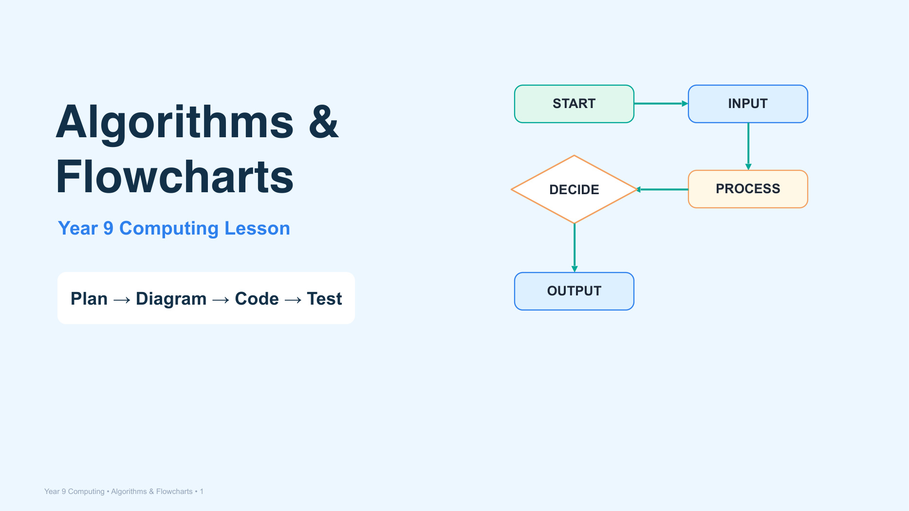
9학년 컴퓨팅 수업
계획(Plan) → 도표 그리기(Diagram) → 코드 작성(Code) → 시험해 보기(Test)
오른쪽 순서도: 시작(START) → 입력(INPUT) → 처리(PROCESS) → 판단(DECIDE) → 출력(OUTPUT)
아래쪽 글: 9학년 컴퓨팅 • 알고리즘과 순서도 • 1
알고리즘(algorithm)은 문제를 푸는 단계별 순서이고, 순서도(flowchart)는 그 순서를 도형과 화살표로 그린 그림이다. 순서도에서 판단(DECIDE)은 마름모, 나머지 단계는 사각형으로 그린다.
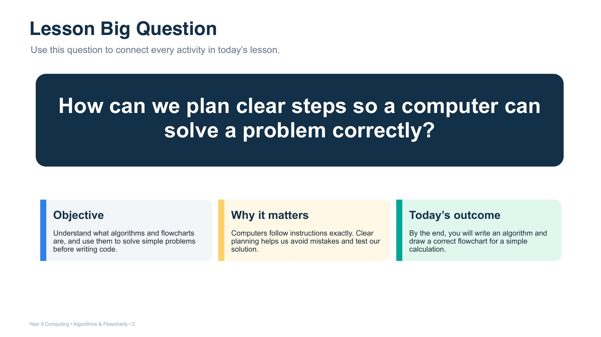
오늘 수업의 모든 활동을 이 질문과 연결해서 생각한다.
컴퓨터가 문제를 올바르게 풀 수 있도록 분명한 단계를 어떻게 계획할 수 있을까?
목표(Objective)
알고리즘(algorithm)과 순서도(flowchart)가 무엇인지 이해하고, 코드를 쓰기 전에 이것들로 간단한 문제를 푼다.
왜 중요한가(Why it matters)
컴퓨터는 명령을 정확히 그대로(exactly) 따른다. 분명하게 계획하면 실수를 막고 우리의 해결 방법을 테스트(test)하는 데 도움이 된다.
오늘의 결과물(Today's outcome)
수업이 끝나면 간단한 계산 하나에 대해 알고리즘을 쓰고 올바른 순서도를 그릴 수 있게 된다.
알고리즘(algorithm)은 문제를 푸는 단계를 차례대로 적은 것이고, 순서도(flowchart)는 그 단계를 도형과 화살표로 그린 그림이다. 컴퓨터는 알아서 짐작하지 않으므로 단계를 빠짐없이 순서대로 적어야 한다.
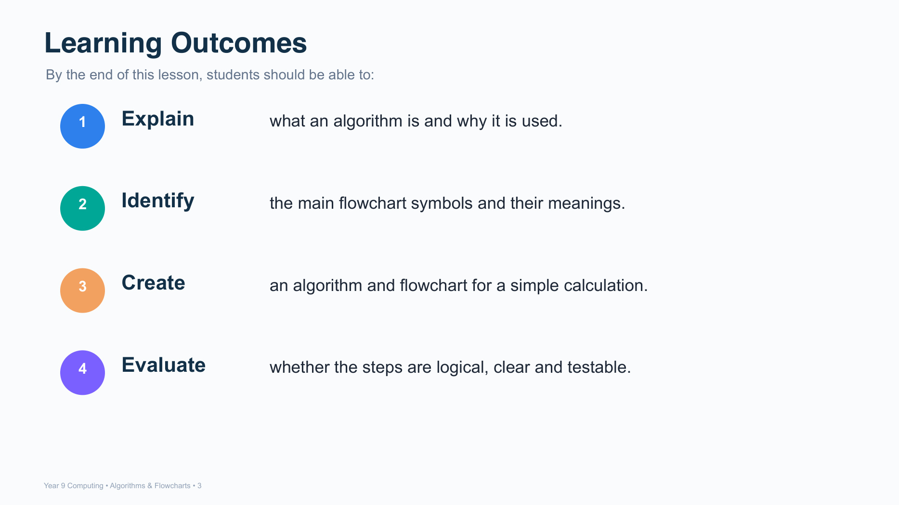
이 수업이 끝나면 학생은 다음을 할 수 있어야 한다:
1. 설명하기(Explain) — 알고리즘(algorithm)이 무엇이고 왜 쓰는지 설명한다.
2. 찾아 말하기(Identify) — 주요 순서도 기호(flowchart symbols)와 각 기호의 뜻을 찾아 말한다.
3. 만들기(Create) — 간단한 계산을 하는 알고리즘(algorithm)과 순서도(flowchart)를 만든다.
4. 평가하기(Evaluate) — 단계들이 논리적(logical)이고, 명확(clear)하며, 시험해 볼 수 있는지(testable) 판단한다.
Year 9 컴퓨팅 • 알고리즘과 순서도 • 3
Explain·Identify·Create·Evaluate는 시험 문제에 그대로 나오는 명령어다. Explain은 이유까지 쓰고, Identify는 이름만 짧게 쓰고, Evaluate는 좋은 점과 문제점을 따져 판단까지 써야 한다.
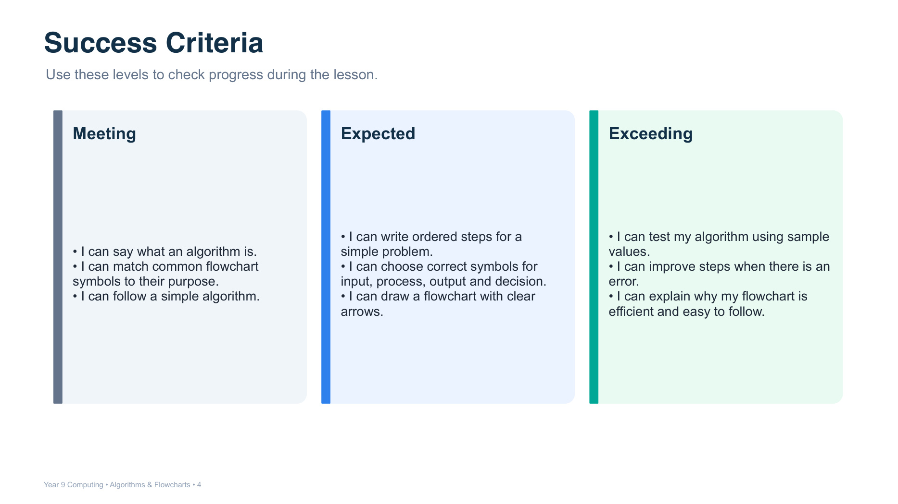
수업 중에 이 단계들로 자기 진도를 확인한다.
기본 도달(Meeting)
• 알고리즘(algorithm)이 무엇인지 말할 수 있다.
• 흔히 쓰는 순서도 기호(flowchart symbols)를 그 쓰임새와 짝지을 수 있다.
• 간단한 알고리즘을 따라 할 수 있다.
목표 도달(Expected)
• 간단한 문제를 푸는 순서대로 된 단계(ordered steps)를 쓸 수 있다.
• 입력(input), 처리(process), 출력(output), 판단(decision)에 맞는 기호를 고를 수 있다.
• 화살표(arrows)가 분명한 순서도(flowchart)를 그릴 수 있다.
목표 이상(Exceeding)
• 예시 값(sample values)을 넣어 내 알고리즘을 시험(test)할 수 있다.
• 오류(error)가 있을 때 단계를 고칠 수 있다.
• 내 순서도가 왜 효율적(efficient)이고 따라가기 쉬운지 설명할 수 있다.
Year 9 컴퓨팅 • 알고리즘과 순서도 • 4
순서도 기호 네 가지(입력·처리·출력·판단)는 영어 이름과 모양을 함께 외워 둔다. 시험에서 기호를 고르거나 직접 그리는 문제가 자주 나온다.
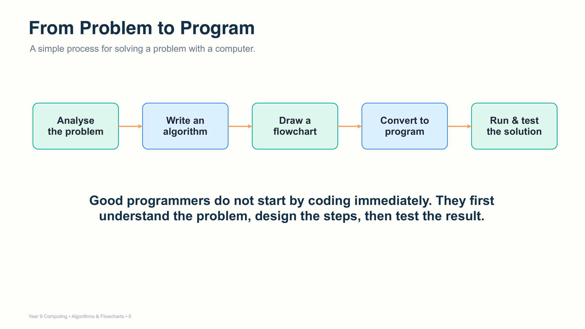
컴퓨터로 문제를 푸는 간단한 과정이다.
① 문제 분석하기(Analyse the problem) → ② 알고리즘 쓰기(Write an algorithm) → ③ 순서도 그리기(Draw a flowchart) → ④ 프로그램으로 바꾸기(Convert to program) → ⑤ 해결책 실행하고 시험하기(Run & test the solution)
좋은 프로그래머는 곧바로 코딩(coding)부터 시작하지 않는다. 먼저 문제를 이해하고, 단계를 설계한 다음, 결과를 시험(test)한다.
다섯 단계의 순서를 영어로 외워 두어야 한다. 코드를 쓰기 전에 알고리즘과 순서도로 먼저 설계한다는 점이 핵심이다.
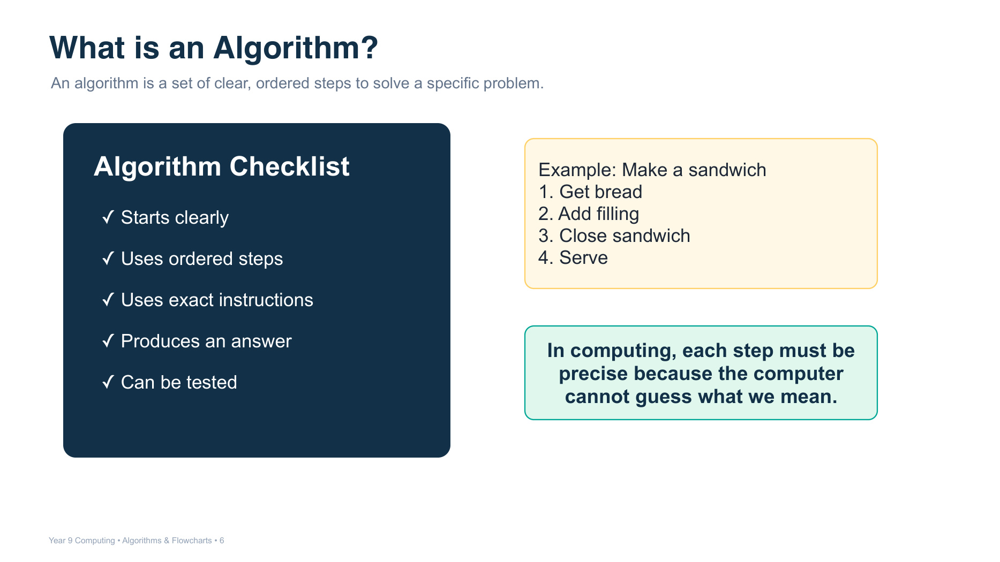
알고리즘은 특정한 문제(specific problem)를 풀기 위한 명확하고 순서가 정해진 단계들(clear, ordered steps)의 모음이다.
알고리즘 체크리스트(Algorithm Checklist)
✓ 시작이 분명하다(Starts clearly)
✓ 순서가 정해진 단계(ordered steps)를 사용한다
✓ 정확한 지시(exact instructions)를 사용한다
✓ 답(결과)을 만들어 낸다(Produces an answer)
✓ 시험해 볼 수 있다(Can be tested)
예시: 샌드위치 만들기(Make a sandwich)
1. 빵을 가져온다(Get bread)
2. 속재료를 넣는다(Add filling)
3. 샌드위치를 덮는다(Close sandwich)
4. 내놓는다(Serve)
컴퓨팅(computing)에서는 각 단계가 정확해야(precise) 한다. 컴퓨터는 우리가 무슨 뜻으로 말했는지 짐작할 수 없기(cannot guess) 때문이다.
Year 9 Computing • Algorithms & Flowcharts • 6
알고리즘의 정의 'a set of clear, ordered steps to solve a specific problem'은 시험에 그대로 나오기 쉬우니 영어 문장째 외워 두면 좋다. 순서(order)를 바꾸면 결과가 달라진다는 점도 함께 기억한다.
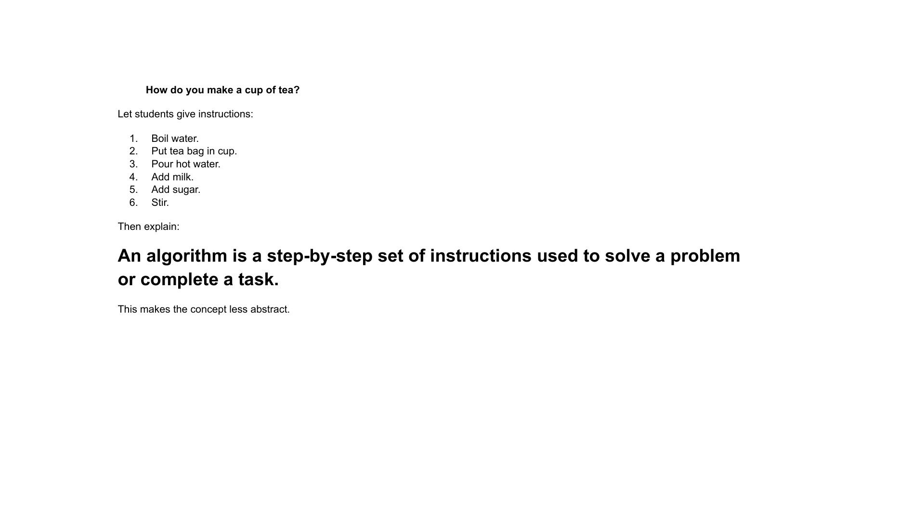
학생들이 순서(instructions)를 말해 보게 한다:
1. 물을 끓인다.
2. 컵에 티백을 넣는다.
3. 뜨거운 물을 붓는다.
4. 우유를 넣는다.
5. 설탕을 넣는다.
6. 젓는다.
그다음 설명한다:
알고리즘(algorithm)은 문제를 풀거나(solve a problem) 일을 끝내기(complete a task) 위해 쓰는 단계별(step-by-step) 명령(instructions)의 모음이다.
이렇게 하면 개념이 덜 추상적(less abstract)이 된다.
알고리즘의 정의 'a step-by-step set of instructions used to solve a problem or complete a task'는 시험에 그대로 나오기 쉬우니 영어 문장째 외워 둔다. 차 만들기처럼 순서가 바뀌면 결과가 달라지므로, 알고리즘에서는 단계의 순서가 중요하다.
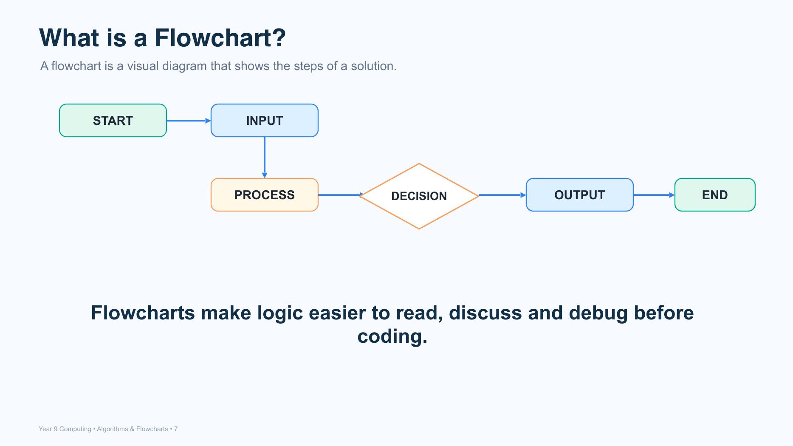
순서도(flowchart)는 문제를 푸는 단계(steps)를 그림으로 보여 주는 시각적 도표(visual diagram)다.
[도표] 시작(START) → 입력(INPUT) → 처리(PROCESS) → 판단(DECISION)(마름모 모양) → 출력(OUTPUT) → 끝(END)
순서도를 쓰면 코드를 짜기 전에 논리(logic)를 읽고, 함께 이야기하고, 오류를 찾아 고치기(debug)가 더 쉬워진다.
도형마다 뜻이 정해져 있다. 시작·끝은 둥근 사각형, 판단(decision)은 마름모이고, 판단에서는 예(Yes)/아니오(No)에 따라 길이 갈린다.
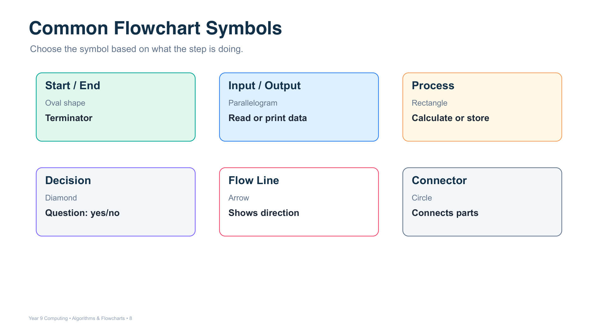
그 단계가 무슨 일을 하는지에 따라 기호를 고른다.
시작 / 끝(Start / End)
타원 모양(Oval shape)
단말 기호(Terminator)
입력 / 출력(Input / Output)
평행사변형(Parallelogram)
데이터를 읽거나 출력한다(Read or print data)
처리(Process)
직사각형(Rectangle)
계산하거나 저장한다(Calculate or store)
판단(Decision)
마름모(Diamond)
질문: 예/아니요(Question: yes/no)
흐름선(Flow Line)
화살표(Arrow)
방향을 보여 준다(Shows direction)
연결자(Connector)
원(Circle)
부분들을 이어 준다(Connects parts)
시험에는 기호 모양과 하는 일을 짝지어 묻는 문제가 자주 나온다. 입력·출력은 평행사변형, 판단은 마름모인데 판단에서는 화살표가 Yes와 No 두 갈래로 나뉜다는 점을 함께 기억한다.
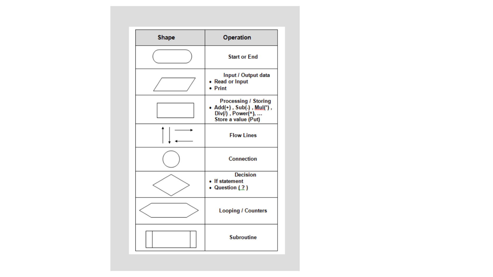
모양(Shape) | 하는 일(Operation)
① 양 끝이 둥근 직사각형 — 시작 또는 끝(Start or End)
② 평행사변형 — 데이터 입력/출력(Input / Output data): 읽기 또는 입력(Read or Input), 출력(Print)
③ 직사각형 — 처리/저장(Processing / Storing): 더하기(Add, +), 빼기(Sub, -), 곱하기(Mul, *), 나누기(Div, /), 거듭제곱(Power, ^) 등, 값 저장하기(Store a value, Put)
④ 위·아래·오른쪽·왼쪽 화살표 — 흐름선(Flow Lines)
⑤ 원 — 연결(Connection)
⑥ 마름모 — 판단(Decision): If 문(If statement), 질문(Question, ?)
⑦ 육각형 — 반복/카운터(Looping / Counters)
⑧ 양옆에 세로줄이 있는 직사각형 — 서브루틴(Subroutine)
시험에는 모양과 이름을 짝짓는 문제가 자주 나온다. 특히 입력·출력은 평행사변형(parallelogram), 판단은 마름모(diamond), 처리는 직사각형(rectangle)이라는 것을 꼭 외워 둔다.
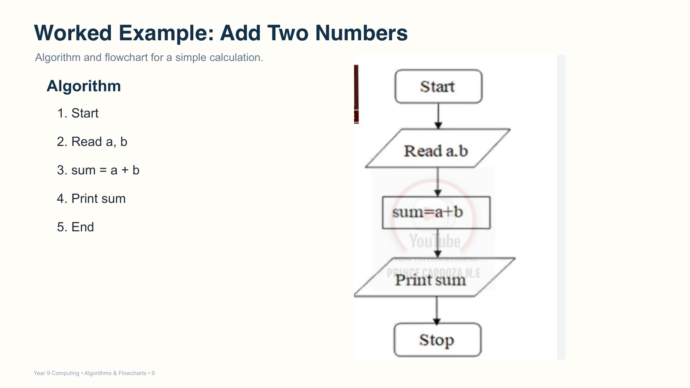
간단한 계산을 위한 알고리즘(algorithm)과 순서도(flowchart)이다.
알고리즘(Algorithm)
1. 시작(Start)
2. a, b를 입력받는다(Read a, b)
3. sum = a + b (합계를 계산한다)
4. sum을 출력한다(Print sum)
5. 끝(End)
순서도(Flowchart) — 위에서 아래로 화살표를 따라간다.
• 둥근 사각형 Start(시작)
• 평행사변형 Read a.b — a, b 입력
• 직사각형 sum=a+b — 계산(처리)
• 평행사변형 Print sum — sum 출력
• 둥근 사각형 Stop(끝)
순서도 도형마다 뜻이 다르다. 둥근 사각형은 시작/끝(terminator), 평행사변형은 입력/출력(input/output), 직사각형은 처리(process)이다. 알고리즘의 각 단계가 순서도의 도형 하나씩과 짝을 이룬다.
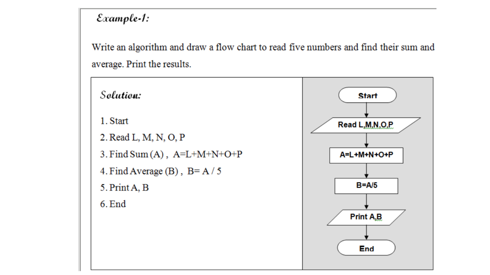
다섯 개의 수를 입력받아 그 합(sum)과 평균(average)을 구하는 알고리즘(algorithm)을 쓰고 순서도(flow chart)를 그려라. 결과를 출력하라.
풀이(Solution):
1. 시작(Start)
2. L, M, N, O, P를 입력받는다(Read)
3. 합(A)을 구한다(Find Sum), A = L+M+N+O+P
4. 평균(B)을 구한다(Find Average), B = A / 5
5. A, B를 출력한다(Print)
6. 끝(End)
순서도(flow chart): 위에서 아래로 화살표로 이어진다.
둥근 모서리 칸 'Start(시작)' → 평행사변형 'Read L,M,N,O,P(입력)' → 직사각형 'A=L+M+N+O+P' → 직사각형 'B=A/5' → 평행사변형 'Print A,B(출력)' → 둥근 모서리 칸 'End(끝)'
순서도에서 도형마다 뜻이 정해져 있다. 둥근 모서리 칸은 시작/끝(terminator), 평행사변형은 입력/출력(input/output), 직사각형은 계산 같은 처리(process)다. 평균은 합을 먼저 구한 뒤 개수(5)로 나누므로 3번과 4번의 순서가 바뀌면 안 된다.
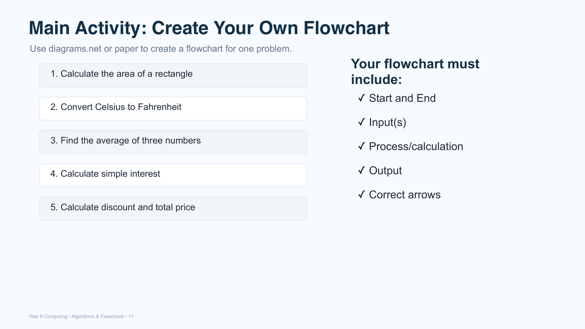
diagrams.net이나 종이를 사용해 문제 하나를 골라 순서도를 만든다.
1. 직사각형의 넓이(area of a rectangle) 구하기
2. 섭씨(Celsius)를 화씨(Fahrenheit)로 바꾸기(convert)
3. 세 수의 평균(average) 구하기
4. 단리 이자(simple interest) 계산하기
5. 할인(discount)과 총 가격(total price) 계산하기
순서도에 반드시 들어가야 할 것:
✓ 시작과 끝(Start and End)
✓ 입력(Input)
✓ 처리/계산(Process/calculation)
✓ 출력(Output)
✓ 올바른 화살표(Correct arrows)
순서도 기호를 구분해 써야 한다. 시작·끝은 둥근 모서리 타원(terminator), 입력·출력은 평행사변형(parallelogram), 처리·계산은 직사각형(rectangle)이다. 예를 들어 1번은 '시작 → 가로(length)·세로(width) 입력 → area = length × width → area 출력 → 끝' 순서로 화살표를 이어 그리면 된다.
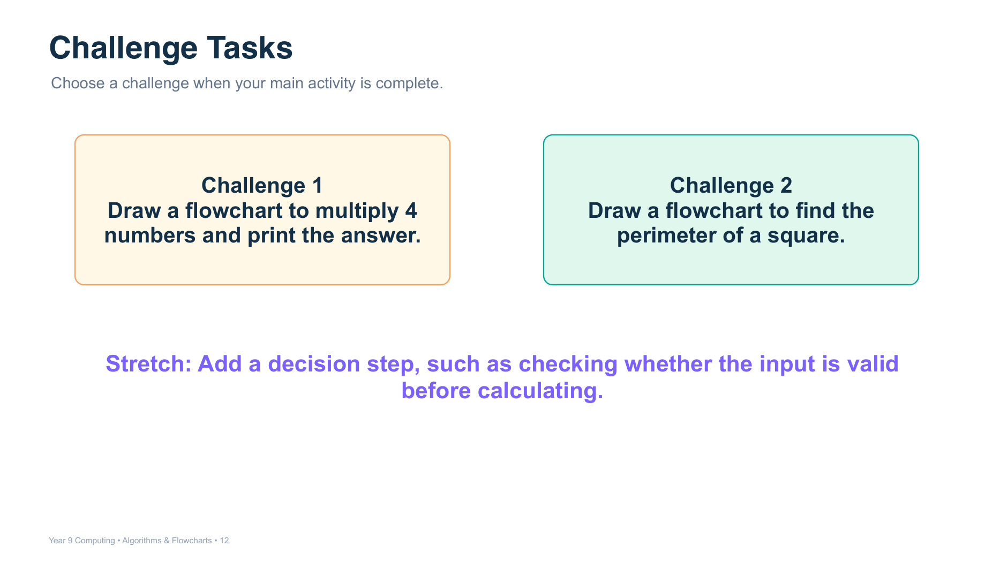
기본 활동을 끝냈으면 도전 과제 하나를 고른다.
도전 1(Challenge 1)
숫자 4개를 곱하고(multiply) 답을 출력하는(print) 순서도(flowchart)를 그린다.
도전 2(Challenge 2)
정사각형(square)의 둘레(perimeter)를 구하는 순서도(flowchart)를 그린다.
심화(Stretch): 계산하기 전에 입력값이 올바른지(valid) 확인하는 것처럼 판단 단계(decision step)를 추가한다.
9학년 컴퓨팅 • 알고리즘과 순서도(Algorithms & Flowcharts) • 12
순서도에서 입력(input)과 출력(output)은 평행사변형, 계산(process)은 직사각형, 판단(decision)은 마름모로 그린다. 정사각형의 둘레는 한 변의 길이 × 4 이다.
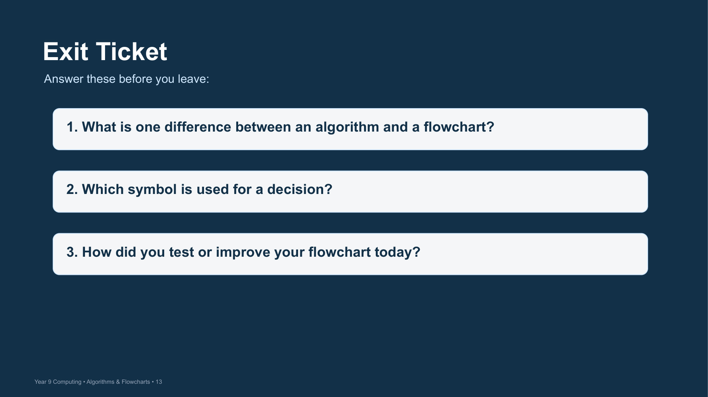
나가기 전에 아래 질문에 답한다:
1. 알고리즘(algorithm)과 순서도(flowchart)의 차이점 한 가지는 무엇인가?
2. 판단(decision)에 쓰는 기호(symbol)는 어느 것인가?
3. 오늘 자신의 순서도를 어떻게 시험(test)하거나 고쳤는가(improve)?
Year 9 컴퓨팅 • 알고리즘과 순서도 • 13
1번은 '알고리즘은 문제를 푸는 단계의 순서이고, 순서도는 그 단계를 기호와 화살표로 그린 그림이다'처럼 답하면 된다. 2번의 답은 마름모(diamond)이고, 예/아니오(Yes/No) 질문을 넣는다.
파이썬 프로그래밍Python Programming with Project1학기
구글 스프레드시트Google Spreadsheet2학기
데이터베이스Database3학기
컴퓨터 네트워크Computer Network3학기
그 밖의 자료주간 안내 · 도구공통
첫 수업에서 나눠주는 수업 약속(Essential Agreement)과 연간 배울 내용(Topics)을 알려주는 자료다. 새 학년이 시작될 때 선생님이 '우리 반은 이렇게 공부한다'를 정리해 주는 오리엔테이션 성격의 글이다. 2026년 8월 17일, Ms Meha 선생님 수업으로 적혀 있다.
수업 약속은 열 가지다. 존중(Respect), 정직(Integrity)은 남의 것을 베끼지 않고 내 힘으로 하는 것이며 다른 사람 것을 썼으면 출처를 밝히는 것이다. 참여(Participation), 시간 지키기(Punctuality)는 수업에 늦지 않고 과제를 기한 안에 내는 것, 책임(Responsibility)은 모르면 도움을 요청하는 것까지 포함한다. 협력(Collaboration)은 모둠 활동에서 똑같이 몫을 나누어 하는 것이다.
나머지 약속은 컴퓨터 수업이라서 특히 강조되는 것들이다. 창의(Innovation)는 실수에서 배우며 새 방법을 시도하는 것, 안전(Safety)은 장비와 프로그램을 규칙대로 쓰고 개인정보를 지키는 것이다. 디지털 시민의식(Digital Citizenship)은 인터넷에 남는 흔적, 즉 디지털 발자국(digital footprint)을 생각하며 쓰라는 뜻이다. 성장 마인드셋(Growth Mindset)은 지적(feedback)을 받아들이고 계속 실력을 키우려는 태도다.
일 년 동안 배울 주제는 학기별로 나뉜다. 1학기(Term 1)는 알고리즘과 순서도(Algorithm and Flowcharts), 파이썬 프로그래밍(Python Programming)이다. 2학기(Term 2)는 스프레드시트와 알고리즘적 사고(Spreadsheets and Algorithmic Thinking), 3학기(Term 3)는 데이터베이스(Databases)와 컴퓨터 네트워크(Computer Networks)다. 평가는 CA-Project, 즉 과제·프로젝트로 하는 평가라고 적혀 있다.
✍️ 꼭 알아야 하는 것
- 1학기에 배울 두 가지는 알고리즘·순서도(Algorithm and Flowcharts)와 파이썬 프로그래밍(Python Programming)이다. 지금 당장 준비할 부분이 여기다.
- 수업 약속 중 정직(Integrity)은 컴퓨터 수업에서 특히 중요하다. 남의 코드를 그대로 가져다 쓰면 표절(plagiarism)이 되므로, 참고했으면 출처를 밝혀야 한다.
📚 이 자료의 핵심 단어

2026년 8월 17일
이 쪽은 수업 첫 시간 표지로, 과목명 Year 9 CSI와 날짜(2026년 8월 17일)만 적혀 있다.

이 쪽에는 담당 선생님 이름 Ms Meha만 적혀 있다

컴퓨터 과학 수업을 위한 필수 약속이다.
존중: 같은 반 친구, 선생님, 모든 사람을 대면에서도 온라인에서도 존중하며 대한다.
정직성: 학문적 정직을 지킨다. 표절과 부정행위를 피한다. 자기 과제는 스스로 하고, 남의 것을 썼으면 출처를 밝힌다.
참여: 수업 토론, 모둠 활동, 여러 활동에 적극적으로 참여한다. 개인 과제와 협력 과제 모두에 온전히 몰두한다.
시간 엄수: 과제를 제때 제출하고 수업에 늦지 않게 온다. 마감과 학습량의 균형을 잡도록 시간을 효율적으로 관리한다.
책임감: 자기 학습을 스스로 책임진다. 정리된 상태를 유지하고, 지시를 따르고, 필요하면 도움을 요청한다.
협업: 친구들과 효과적으로 협력한다. 아는 것을 나누고, 다른 사람을 돕고, 모둠 활동에 똑같이 기여한다.
혁신: 창의성과 문제 해결을 받아들인다. 새로운 생각을 실험하고 실수에서 배운다.
안전: 장비, 소프트웨어, 온라인 자료를 쓸 때 모든 안전 지침을 따른다. 자기 개인정보를 보호하고 다른 사람의 사생활을 존중한다.
디지털 시민의식: 인터넷을 책임감 있게 사용한다. 부적절한 콘텐츠를 피하고 자기 디지털 발자국을 의식한다.
성장 마인드셋: 피드백과 도전에 열린 자세를 유지한다. 계속 배우고 실력을 키우려는 마음을 갖는다.
컴퓨터 과학 수업에서 지켜야 할 약속이 존중·정직성·참여·시간 엄수·책임감·협업·혁신·안전·디지털 시민의식·성장 마인드셋 열 가지로 정해져 있다.
정직성 항목은 표절과 부정행위를 금지하며, 남의 것을 참고했으면 출처를 밝히라고 요구한다.
안전과 디지털 시민의식 항목은 온라인에서 자기 개인정보를 지키고, 남의 사생활을 존중하며, 디지털 발자국을 의식하라고 말한다.

1학기
1. 알고리즘과 순서도
2. 파이썬 프로그래밍
2학기
3. 스프레드시트와 알고리즘적 사고
3학기
4. 데이터베이스
5. 컴퓨터 네트워크
한 해 동안 배울 주제는 모두 5개이며, 학기별로 나뉘어 있다.
1학기에 알고리즘·순서도와 파이썬을, 2학기에 스프레드시트, 3학기에 데이터베이스와 컴퓨터 네트워크를 배운다.

CA-Project (수행평가 프로젝트)
이 과목의 평가는 CA-Project(수행평가 프로젝트) 방식으로 이루어진다.